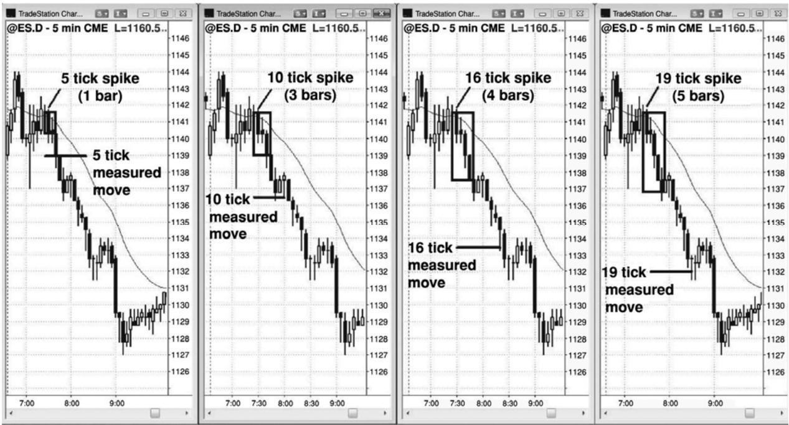
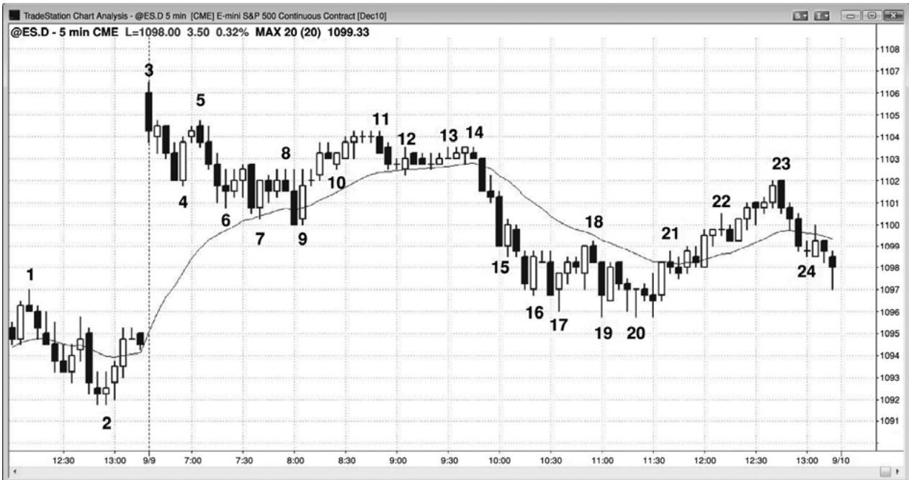
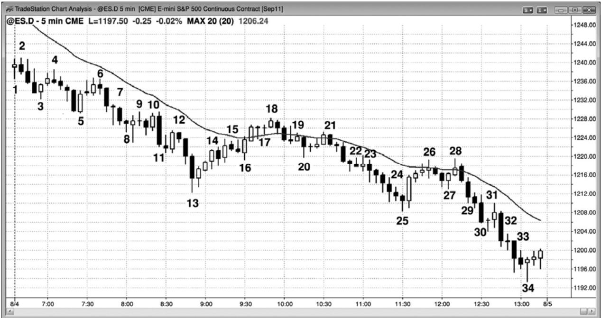

第25章 交易的数学¶
第 25 章 交易的数学：我应该做这笔交易吗？如果做这笔交易，我会赚钱吗？
我有一位朋友，他做交易 30 多年了，我认为他每天都要在电子迷你中赚 10 点或更多。他曾告诉我，普通的初学者一天至少应该能赚 6 点。我告诉他我不同意他的说法——如果初学者一直每天赚两点，那么他们就非常高兴。通过那次谈话我认识到，一些交易者在经过很长时间非常成功的交易之后，已经完全忘记了输家阵营里是什么情形。不过，那次谈话也使我认识到，经过足够的练习之后，交易者们的良好习惯已经成为他们自身如此重要的一部分，以至于交易成了毫不费力的工作。但是不管怎样，数学仍然是他们操作的基础。实际上，交易完全基于数学（译注：上句黑体），所有成功的交易者都对概率和交易数学有着透彻的理解。说，它是一个优势。
初学者们在不断寻找完美交易，架构要清晰，成功率要高，风险要小，回报要大。在一天结束时，他们奇怪自己怎么一个也没找到。那种交易肯定存在，要不那些大型交易者们是怎么变得富有的呢？他们并没有认识到，赚钱是非常难的，因为市场中充满了聪明人，他们都在努力从彼此身上赚钱。这使得任何人都不曾拥有很大的优势。一个完美架构刚开始形成时，每个人都在利用它交易，很快它就会消失，因为没有人愿意站在反方。错过完美架构的交易者们不想追逐它，只会在回撤入场。一旦市场在小幅运动后回撤，那些刚刚认为是完美交易而入场的交易者们现在就陷入浮亏。他们现在迅速抛出自己的头寸，完美交易现在走向相反方向。
作为一名交易者，如果想要赚钱，那么你需要拥有一个优势，也就是根据风险和回报大小，以及在保护性止损被触发前到达利润目标的概率得出的数学优势。优势极少会很大，当三个变量中有一个变量异常好时，那么它将被另外一个或两个不好的变量所抵消。举例说明，如果潜在回报比风险大很多，也就是说风险相对较小，那么胜率通常也很低。如果胜率很高，那么回报通常会很小，风险通常会很高。传统机构拥有的优势是，他们的成交量足以影响市场方向，他们拥有很多同时运行的交易系统和很多独立交易的交易员，那将使他们的资金曲线较为平滑。他们的目标是小回报（每年的收益率通常为 10～20%）、低风险和高胜率（他们预期一年中有 70%以上的时间是赚钱的）。高频交易（HFT）公司的优势是他们拥有高度可靠的统计优势，或许只有 5%或更低（与 50-50 纯运气系统相比，小于 55%的胜率大约是5%的优势），但是他们一周要交易成百上千万次。这带给他们的是一种类似赌场的优势。如果某个赌场只有一位顾客，他一次下注 10 亿美元，那么赌场就有 47%的机会破产。但是，当大量顾客以普通规模下注时，他们所拥有的优势将为他们带来持久的利润。对于 HFT公司来说也是如此。由于很多公司在每笔交易上只希望赚取一两个跳动的利润，所以他们每笔交易的回报非常小，风险相对来说比较大，但他们的成功率很高。很多此类公司可能有 90%或更多的机会每天都赚钱，也就是说他们的成功率很高。日内交易者能够拥有的优势是杰出的读图能力，结果达到很高的胜率，可能为 70%或更高。再加上至少与风险一样大的回报，他们能够利用自己的资金赚取丰厚的利润。世界上大部分最优秀的交易者都是随意型的，利用主观判断来制定决策。当一位超级明星能够自己开一只基金，为自己交易时，为什么会选择继续在高盛投资公司工作，分享他的收益呢？很少有人会继续为别人工作，因此，世界上最伟大的交易者们都是在为自己交易，那也是对我们所有人最大的诱惑。华尔街上有无数这样的例子，很多著名的交易者每年通过他们的随意型交易赚取数十亿美元。有些人会一次持有头寸数月到数年，比如沃伦·巴菲特，其余的人都是日内交易者，比如 Paul Rotter，人称“Eurexflipper”。在权衡风险、回报和胜率时，日内交易者有着多种选择，有些人愿意接受较低的成功率，如 40%，以便换取约为风险的 3 倍或 3 倍以上的利润。
在如下示例中，交易者拥有优势：
P229
胜率为70%或更高（回报至少为风险的一半，才能打平）：
刮头皮，但由于大多数交易者不能一直保持 70%以上的胜率，所以他们仅应在回报至少与风险一样大时交易。举例说明，如果你认为在电子迷你中需要两点的止损，那么仅在合理回报至少为两点时交易。
胜率为60%或更高（回报至少与风险一样大，才能打平）：
在多头趋势中向均线回撤的高点2买进。
在空头趋势中向均线回撤的低点2卖空。
在多头趋势中的楔形多头旗形回撤买进。
在空头趋势中的楔形空头旗形回撤卖空。
在多头趋势中多头旗形突破后的突破回撤买进。
在空头趋势中空头旗形突破后的突破回撤卖空。
在多头趋势的强多头尖峰中的高点 1回撤买进，但是不要在买进高潮后高点1买进。
在空头趋势的强空头尖峰中的低点 1 回撤卖出，但是不要在卖出高潮后的低点 1 卖出。
在交易区间的顶部做空，如果是二次入场，那么更好。
在交易区间的底部买进，如果是二次入场，那么更好。
趋势反转：
趋势线被强势突破后，寻找趋势极点测试后的反转，前提是那里出现一条不错的反转信号棒。交易者们正准备在底部的更高低点或更低低点买进，或者在顶部的更高高点或更低高点做空。
强最终旗形反转。
在空头台阶形态的第三次或第四次下推买进，预期市场测试前一下推的低点。
在多头台阶形态的第三次或第四次上推买进，预期市场测试前一上推的高点。
使用限价单入场；这需要更多的读图经验，因为交易者正在入场的交易方向，刚好与市场当前的运动方向相反。不过经验丰富的交易者能够可靠地使用限价单或市价单在如下架构入场：
以市价或棒线收盘价在强多头突破的多头尖峰中买进，或者在前一棒的低点或低点下方使用限价单买进（尖峰入场需要较宽的止损，而且尖峰形成的速度很快，所以这一组合对于很多人来说是难以使用的）。
以市价或棒线收盘价在强空头突破的空头尖峰中卖出，或者在前一棒高点或高点上方使用限价单卖出（尖峰入场需要较宽的止损，而且尖峰形成的速度很快，所以这一组合对于很多人来说是难以使用的）。
在测量运动（目标）附近的空头突破买进，前提是那个突破不是太强——举例说明，如果电子迷你中的区间高度约为4点，那么就在区间下方 4点处使用限价单买进，冒4 点的风险，预期市场会测试突破点。只有非常老练的交易者才可考虑这样操作。
在测量运动（目标）附近的多头突破卖出，前提是那个突破不是太强——举例说明，如果电子迷你中的区间高度约为4点，那么就在区间上方 4点处使用限价单卖出，冒 4 点的风险，预期市场会测试突破点。只有非常老练的交易者才可考虑这样操作。
在强势反转之后或交易区间底部可能形成的新多头趋势中，使用限价单在低点1或低点2弱信号棒下方买进。
在强势反转之后或交易区间顶部可能形成的新空头趋势中，使用限价单在高点1或高点2弱信号棒上方做空。
在均线处平静的多头旗形内，使用限价单在前一棒（低点）或其下方买进。
在均线处平静的空头旗形内，使用限价单在前一棒（高点）或其上方做空。
在向上突破多头旗形的多头棒下方买进，预期出现突破回撤。
在向下突破空头旗形的空头棒上方做空，预期出现突破回撤。
胜率约为50%（回报至少比风险大50%，才能打平）：
交易区间中准备逐步加仓的交易的初始入场。
在紧凑交易区间中买进或卖出，预期产生的突破会带来比风险大若干倍的利润。
当趋势可能正在向下反转时，在交易区间中的更低高点做空，或者当趋势可能正在向上反转时，在更高低点买进。由于入场点位于交易区间中部，所以胜率为 50%，但回报通常是风险的两倍。
胜率为40%或更低（回报至少应为风险的两倍）：
在空头趋势的底部买进，或者在多头趋势的顶部做空，反转交易的风险很小，回报却非常大——举例说明，在市场上涨至明确阻力位时做空，使用限价单在阻力位下方 1 个跳动处入场，保护性止损位于阻力位上方一两个跳动处。在关于限价单入场的一章中有很多个例子。
P230
胜率为40～60%，取决于环境（当胜率只有40%时，回报至少为风险的两倍才能打平）：
当市场下跌时，使用限价单在多头趋势中的突破测试买进，或者当市场上涨时，使用限价单在空头趋势中的突破测试做空。
在新的多头趋势中，或者在交易区间的底部，使用限价单（一个潜在的更高低点）在低点 1 或低点 2 信号棒的下方买进，尽管它并不弱。在新的空头趋势中，或者在交易区间的顶部，使用限价单（一个潜在的更低高点）在高点 1 或高点 2 信号棒的上方做空，尽管它并不弱。举例说明，如果市场可能正在完成一个多头趋势中的楔形反转顶，并且回撤了一棒或几棒，那么在高点 1 或高点 2 信号棒上方做空，就是在你希望出现的空头波段做空。
磁力位反向操作，比如在多头趋势中的上涨测量运动的目标处做空，在空头趋势中的下跌测量运动的目标处做多。
在一轮过度的空头趋势的支撑区内，在异常大型的空头趋势棒的收盘价附近的卖出高潮买进（高潮将在第三本书中讨论）。
在一轮过度的多头趋势的阻力区内，在异常大型的多头趋势棒的收盘价附近的买进高潮做空。
初学者们很快便了解到，趋势交易看起来是一种赚钱的极好方法。不过他们不久便发现，趋势交易实际上同其他任何类型的交易一样难。因为如果他们赚钱，肯定就有人要赔钱。市场是一种零和游戏，交易双方都有着数不尽的聪明人。因此，交易者方程的三个变量总是使优势非常小，而且很难评估。一个交易者要想赚钱，他就不得不一直比另外一半交易者优秀。由于大部分竞争者是获利的机构，所以交易者必须非常优秀。在趋势中，胜率通常比初学者预期的要低，而风险则高于他们的预期。在交易区间中，风险不是很大，但胜率和回报也不大。在反转中，虽然回报可能很大，但风险也很高，而且胜率较低。在刮头皮交易中，胜率很高，但是与风险相比，回报很低。
交易者方程
虽然大部分交易者不会用数学术语来研判交易架构，但所有成功交易者都使用交易者方程，至少是在潜意识中使用。当决定是否交易时，你常常听到电视权威们提到风险/回报比。很遗憾，他们忽视了一个同等重要的变量— —胜率。要想选择一笔交易，你必须相信交易者方程是有利的：胜率乘以回报的积必须要大于败率乘以风险的积。如果某位权威说一笔交易拥有很好的风险/回报比，那么他只是在说，如果你能正确管理交易的话，那么它拥有优势或数学优势。他的推荐中暗含的意思是，那笔交易“或许”会成功，也就是说他认为有大于50%的几率你会赚钱。虽然他们不以这种方式来考虑他们推荐的交易，但如果他们是成功的交易者，那么这是他们必须相信的，因为如果不全盘考虑这三个变量，就不可能成功。
对于任意一笔交易，你都可以设定其回报和风险，潜在回报就是入场点到利润目标的距离，风险就是入场点到止损的距离。求解交易者方程的难点是给胜率赋一个值，从来不会确切地知道胜率有多大。一般而言，如果你不确信，那么就假定胜率和败率都是50%，如果你自信地认为信号看起来不错，那么就假定胜率为60%，败率为40%。不要老是担心市场可能会走多远，只要判断交易架构看起来是好还是不好就可以了。如果交易架构看起来不错，那么就假定与下跌相比，上涨相同幅度的几率为60%或更高。这就是等距运动的概率（或方向概率）将在本章的后面部分讨论。如果潜在回报比风险高很多倍，那么交易者们也会考虑做不大可能成功的交易。如果那样的话，他们应该假定胜率是 40%。如果胜率还要低很多，那么无论潜在回报有多高，也极少有交易者还会考虑交易。
重要的是理解这些概率的含义。否则，当市场表现出初学者们认为不恰当或不可能的行为时，他们将会变得焦躁不安。无论你感觉多么自信，市场运动的方向也常常与你认为它应该的运动方向相反。如果你有 60%的自信认为市场会上涨，那就意味着在 40%的情况下，市场会下跌，如果你做了那笔交易，那么你就会赔钱。如果一位命中率只有 40%的射手正在 30码（译注：约合 27.4 米）之外向你射击，你会忽略他的存在吗？所以你同样不能忽略 40%的败率。40%是非常真实的，是危险的，所以一直要尊重那些站在你的对立面的交易者。
P231
如果你因为一笔交易的胜率只有 50%而不选择它，只选择你认为胜率为 60%的那些交易，那么你将有一半的机会错过一笔很好的交易。这只是交易的一部分。在这种零和游戏中，有着太多的聪明人，其中一半人的看法与另一半人的看法截然相反，因此优势通常非常小。无论市场做出何种举动，都不要感到不安和迷惑。一切皆有可能，即使你不理解正在发生什么。没有人曾经真正明白为什么，原因从来都不重要。你是通过交易数学而不是原因来赚钱，因此，如果有人仅在交易者方程非常有利时交易，那么他很有可能成为一名稳定盈利的交易者。
如果你要想在交易中常年获利，那么你必须保持在自己的舒适区内。有些交易者喜欢选择回报比风险大若干倍的交易，他们情愿只有 30～40%的交易盈利。这种方法拥有不错的交易者方程，但是大部分交易的回报只与风险差不多大。于是这些交易者将错过每天发生的大部分交易，原因是他们认为较大的回报不能弥补较低的胜率。有些交易者只选择高胜率架构，他们甘愿接受与风险一般大的回报。但是，当市场做趋势运动时，回撤常常很小，架构的胜率通常不足 50%。举例说明，如果有一条疲弱的空头通道，通道内的棒线拥有突出的尾线，那么可能在通道底部形成一个卖出信多。看起来几率偏向于形成一段交易区间，但是愿意在底部做空，正在寻找一个幅度为风险两三倍的波段的空头，将会做得很好。只想要高胜率交易的那些交易者们，当他们坐在那里等待高胜率的反转架构买进，或者高胜率的回撤卖出时，他们会看到空头趋势继续运动了10棒或20 棒。这也是一种可以接受的交易方法。有些交易者能够适应所有环境，能够根据市场来调整自己的交易风格。这使得他们全天都可以获利地交易，那是每位交易者的目标。但实际上大多数优秀的交易者拥有自己特定的风格，会等待与自己的风格一致的架构。
与所冒的风险相比，刮头皮者们追求的利润较小（他们追求的利润至少应该与风险一样大），他们需要很高的胜率以获得正的交易者方程。不要因此而假定他们只会在旗形交易，因为很多人也会在强势突破交易。对于强势突破，止损理论上要超越尖峰，有时可能非常远（举例说明，在一个由 4 条多头趋势棒构成的突破中，初始止损理论上要低于第一棒低点，不过大多数交易者不会冒那么大的风险。）。但是，由于突破很强，所以等距运动的概率为 60%或更高。这就意味着他们可以选择高风险的交易，因为回报和胜率都很高。为了保持资金风险与其他交易相同，他们必须交易较小的规模。
一天当中，交易者所要做出的最重要的决定之一是，在前一棒的高点或低点处，到底是多方还是空方获胜。举例说明，如果有一条强多头趋势棒，那么在它的高点和收盘价附近，将会有更多空头卖出建立空头头寸，多头卖出获利了结，大部分使用市价单或限价单，还是有更多多头建立多头头寸，空头买回他们的空头头寸，大部分使用止损单呢？类似地，在低点处，将会有更多的买进还是卖出呢？交易者们努力评估赚取足够利润，以弥补交易中所冒风险的概率。他们的目标是在较长时间内赚钱，他们知道自己会经常亏损。但是，为了长期获利，他们需要选择那些拥有有利的（正的）交易者方程的交易。
一旦看到一个可能的架构，你必须要做的第一件事就是你的保护性止损必须设多远。一旦知道了自己的风险，你就可以确定自己能够交易的股数或合约数，使你的总风险保持在正常限制之内。举例说明，如果在购买一只股票时你通常所冒的风险为$500，而且你认为需要把当前交易的保护性止损设在入场点下方1个跳动处，那么你就可以交易500 股。然后你就要确定交易的胜率。如果你不能确定，那么就假定交易的胜率为50%。如果胜率为50%，那么交易的回报应至少是风险的两倍，才能使那笔交易值得做。对于那笔做多交易，如果你不能合理地预期赚$2.00，那么就不要做。如果胜率是 60%，那么你的回报必须至少与风险相等，如果$1.00 的利润目标不合理，那么就不要做那笔交易。如果你要做那笔交易，就要确保使用$1.00 的利润目标，因为那是当风险为$1.00，胜率为 60%时使交易者方程为正的最低要求。
每一笔交易都需要一个数学基础。在电子迷你中，假定你不得不冒两点的风险，而且你正在考虑一个做空架构。你在陪掉两点前赚取两点的几率是60%吗？你有70%的几率赚到1点，或者有 40%的几率赚到4点吗？如果你对上述问题的回答都是肯定的，那么至少有最低限度的数学理由做那笔交易。如果你对上述所有问题的回答都是否定的，那么就考虑一笔做空交易的相同的三种可能性。如果三个问题中任意一个问题的答案是肯定的，那么就考虑做那笔交易。如果对于多头和空头的答案都是否定，那么现在使用止损单入场就不是一种好方法，而且市场不明朗。这就意味着市场在交易区间内，老手们可以准备使用限价单在棒线上方做空，在棒线下方做多。
交易者方程包含三个变量，由于交易者们的个性，他们会侧重于三个变量中的某一个。举例说明，需要高胜率才能在一天中保持专注的交易者，在寻找可能的交易时将不得不接受相对较低的回报和较高的风险。当胜率很高时，失衡比较明显，市场很快就会恢复中立。结果那波运动通常只持续几棒，所以回报通常非常小。由于好的刮头皮架构通常拥有较高的胜率和较低的风险，所以在面对很强的刮头皮架构时，交易者通常要选择最大的头寸规模。另一个极端是希望回报比风险大很多的交易者，为了实现那一目标，他们不得不接受只有大约40%的交易盈利的现实。当胜率较低时，交易者们通常会交易较小的头寸，有些交易者会在市场向有利方向运动时逐步加仓。因此，波段交易者的初始头寸通常比刮头皮交易者的小。还有一类人可能是风险厌恶型的，他们希望每笔交易的风险最低。为了实现那一目标，交易者必须接受较低的回报和较低的胜率。还有些交易者会选择市场给出的任意交易，并且根据市场环境采用恰当的交易方法。当胜率相对较高时，他们会以较快的速度获利了结。当看起来一笔交易所能提供的最重要的特征是它的回报时，他们将接受较低的胜率，并且情愿把更多头寸波段化，以便使那种策略随着时间的发展长期有效。很多交易在这两种极端情况之间，大约有百分之五十的胜率。每当交易者选择一笔交易时，他应该总是尝试使回报为风险的两倍，以保持交易者方程为正。
P232
虽然低胜率交易的潜在回报可能比风险高很多，所以是很棒的交易，但是对于大部分交易者来说，有一个与生俱来的问题。因为波段交易拥有很大的回报，所以，根据定义，他们也必须拥有较低的胜率和较高的风险。一笔交易不能既用有很高的胜率，又能获得与风险相比很高的回报。为什么呢？记住，必须有一个人站在交易的另一方，而且由于是机构控制市场，所以你不得不认为有一家机构情愿与你交易。如果你的胜率是80%，那么他的胜率就是20%。如果你的回报是 6 点，那么他的风险就是 6 点。如果你的风险是两点，那么他的回报就是两点。因此，如果你认为自己有 80%的几率冒两点的风险博取 6 点的利润，那么你就是认为有机构愿意站在你交易的相反方，他们有20%几率冒6点的风险博取只有两点的利润。因为在巨型市场中那实际上是不可能的，所以你不得不假定你对变量的评估是错的，那笔交易并不是你想象的那样好。没有机构必须愿意与你做相反的操作。但是，包含所有机构的市场，实际上就像是一个机构，却会做出那样的操作。因此，某个机构的组合不得不情愿与你的每一个操作相反，如果你的交易非常棒，那么他们的交易就非常恐怖，市场可能永远不会令那种交易形成。是的，有很多天真的交易者会由于错误解读了市场而情愿站在你交易的另一方，但市场是由机构非常有效地控制着，他们绝不会让优势变得那么大。你应该假定，实际上每一笔发生的交易的双方都是由一家机构设定的，或者是由私人交易者设定了一笔机构愿意做的交易，如果那位私人交易者不设定那笔交易，那家机构也会做。私人交易者们会设定很多交易，但是，无论他们多么无知地试图用自己的订单推动市场，他们都无法令市场运动。只有当某个机构愿意设定相同的订单时，他们的订单才会被执行。举例说明，如果电子迷你为1264点，你入场一笔多头交易，保护性卖出止损单在1262 点，除非有一家机构也愿意在 1262 卖出，否则你的止损不会被击中。实际上所有交易都是这样。如果市场正在强势上涨，那么为什么还会有机构在低于市价的价位卖出呢？因为很多机构是在低很多的价位买进的，他们正在寻找理由获利了结。如果他们认为市场跌至 1262 是部分获利的一个理由，那么他们会在那里卖出。如果市场击中你的止损，那么并不是在猎杀那些小伙计们的止损。而是有机构认为在1262点卖出是一个拥有坚实数学基础的决策。
当一笔交易开始向高胜率、高回报和低风险发展时，机构将快速动作，利用那种优势，使那种优势不会变得非常大。另外，在那种优势亏损一侧的公司，会快速动作，以提高自己的优势。市场将形成快速大幅的运动，表现为在那个利润目标方向上的一条或多条大型趋势棒（一个尖峰），在架构变强前，使风险（所需止损的幅度）大大增加。弱信号和低胜率使得大部分波段交易很难操作。没有人打算给你钱，交易总是变得很难。如果你看到一个很容易赚钱的架构，那么你是读错了市场，很快你会发现自己把钱给了别人。
在大型市场中，90%或90%以上的交易都是由机构完成的，也就是说，市场实际上就是机构的一个集合。随着时间发展，几乎所有机构都是获利的，很少有机构会在运行不久后歇业。由于机构是获利的，而且他们就是市场，所以，你所做的每一笔交易，都有一位可能获利的交易者（机构集合的一部分）站在交易的另一方。如果没有一家机构愿意站在交易的一方，同时另一家机构愿意站在交易的另一方，那么不可能产生任何交易。所有成交量的 70%是由计算机算法完成的，私人交易者们产生的小部分成交量，并不足以使程序交易偏离方向。只有当机构愿意做相同的交易时，私人交易者们设定的小成交量交易才会执行。如果你想在某个价位买进，那么除非一家或多家机构也想在那一价位买进，否则市场不会到达那一价位。除非一家或多家机构愿意在某个价位交易，否则你不能在那一价位交易，因为市场只会到达有些机构愿意买进，另外一些机构愿意卖出的价位。如果你交易 200 张电子迷你合约，那么你的交易规模就达到了机构的水平，你实际上就成了一家机构，有时你能够令市场运动一两个跳动。但是，大部分私人交易者没有能力让市场运动，无论他们在多么无知地交易。市场不会去猎杀你的止损。市场可能会测试你的保护性所在的价位，但那与你的止损毫无关系。只有一家或多家机构认为在某个价位卖出是合理的，同时有另外的机构认为在那里买进有利可图时，市场才会测试那一价位。在每个跳动，都有机构买进，另外有机构卖出，他们都拥有经过证明的系统，设定那些交易将会赚钱。
P233
每当有一位交易者刮头皮时，另一方的交易者或许是一位波段交易者。不过很多波段交易者也会站在其他波段交易者的对立面。优秀刮头皮者不可能（不？？）选择站在其他优秀刮头皮者所设定交易的另一方，因为两个方向上的风险和回报大致相同，只有一方可以拥有很高的胜率。刮头皮者拥有很高的胜率，所以相对一方的交易者拥有很低的胜率。由于他是一位机构交易者，所以你不得不相信他的方法是健全的，而且长期来讲会获利。在一场零和游戏中，你站在他的对立方怎么会赚钱呢？因为你不是。你的入场是相反的，但你的管理不是。比如说你在电子迷你中使用两点的利润目标和两点的止损，正在交易区间顶部的弱高点1 买进信号棒上方做空，正确地认为你拥有 60%以上的成功率。当你正在卖出时，机构交易者正在买进，他的风险可能也是两点，刚好与你的回报相对（在你获利了结的价位，他将被止损踢出），但是他的回报远大于你的风险。你的保护性止损是两点。在保护性止损处，你将认陪买回你的空头头寸。但是，他不会那一价位卖出自己的多头头寸。他的利润目标可能大很多倍，所以他可以拥有正的交易者方程，尽管胜率很低。他可能也在使用很宽的止损，并且采用逐步加仓的策略，两者可能使他的胜率提升到 60%或更高，尽管他的初始入场胜率可能只有 40%。请你考虑一下，如若无法通过交易管理使交易者方程为正，那么低胜率交易就不可能存在，因为那样就没有机构愿意选择低胜率交易，它们将永远不被触发。只有某家公司愿意选择它们，它们才会触发，除非有一种方法能够让他们获利，否则没有机构愿意选择它们。机构有很多管理交易的方法，以确保自己获得正的交易方程。他们的方法包括逐步加的胜率。
市场行为的频谱是从极度单向——比如强趋势中的尖峰阶段，到极度双向——比如极为紧凑的交易区间。大部分时间里，市场行为位于两个极端之间，有时单向交易较为突出，有时双向交易较为突出。在交易区间中很容易看到这种情况，交易区间中的趋势棒代表着单向交易，反转和尾线代表着双向交易。当市场处于多头趋势中，并且向上超越前一棒高点时，它就是在向上突破，当市场跌破前一棒低点时，它就是在回撤。反过来在空头中也是正确的，突破就是跌破前一棒低点，回撤就是向上超越前一棒高点。当市场极度单向时，比如在强趋势的尖峰阶段，回撤差不多都是由获利了结引起的。举例说明，如果市场处于由 5 条多头趋势棒组成的强上涨尖峰中，然后跌破第五棒低点，那么这是由在低位买进的多头部分获利了结引起的。记住，必须有机构站在每一笔交易的另一方，而且只有当那是获利策略的一部分时，机构才会那么做。也有一个卖出真空将市场吸引至那一棒下方。由于所有急切买进的多头——或者新建多头头寸或者加仓，已经在前一棒的低点及其下方设定限价单，希望在小幅打折的情况下做多。这些多头迫切做多，但是只希望在较好的价位入场。如果前一棒的高度为 6 个跳动，那么这些多头中有很多人会在低于那一棒高点 6 个跳动或更低的价位开始买进（也就是说，在那一棒的低点或其下方）。这就意味着（从那一棒高点）向下1到5个跳动，买家相对缺乏，于是价格受到吸引，快速下跌寻找买家，在那一棒低点附近成功找到买家。记住，获利了结的多头正在卖出部分多头头寸，他们需要有买家站在交易的另一方。一旦获利了结者们决定部分获利了结，他们就需要在有足够交易者愿意买进的价位卖出。一旦市场到达足够的高度，唯一愿意买进的就只剩下那些等待市场跌破前一棒时买进的交易者们了。如果足够的多头想要卖出，那么市场将不得不跌破前一棒低点，从而使他们能够退出部分多头头寸。另有一些多头只会在市场运动至前一棒下方时开始获利了结，所以他们会在前一棒下方 1 个跳动处设定止损单卖出。急于买进的多头将选择站在获利了结多头的对立方。只有非常少的空头会在那一棒的低点下方做空，所以那种下跌不是由正准备做空头波段交易的空头引起的。虽然有些公司可能通过在前一棒下方使用止损单做空来逐步加大空头头寸，但那不是强尖峰中第一个回撤的重要因素。当市场极端单向时，准备做空的机构们知道，他们很快就能在更高价位做空的几率可能为 80%或更高，所以没有理由在此做空。
由于强趋势中的小型回撤差不多都是由获利了结引起的，所以，当强多头趋势中正形成第一个回撤时，空头通常无法通过在前一棒的低点下方做空而获利。同样，当强空头趋势中正形成第一个回撤时，多头通常也无法通过在前一棒的高点上方买进而获利。不过，当市场向上突破多头趋势中前一棒的高点，或向下突破空头趋势中前一棒的低点时，有一种可获利的方式来管理多头交易和空头交易。如果买家和卖家都无法在强多头趋势中的前一棒上方赚钱，那么市场不会在那里交易，因为只有当一家机构能够通过在那里买进而赚取利润，另一家机构能够通过在那里卖出而赚取利润时，市场才会到达那一价位。那一价位的卖出包括多头的获利了结和空头的卖空，随着市场的双向性增加，空头的做空在成交量中所占的比例越来越大。在强空头趋势中，如果买家和卖家都无法在市场跌破前一棒时赚钱，那么市场不会跌至那一棒下方。为什么机构会以失败的策略交易呢？他们永远不会。买家公司和卖家公司不必每笔交易都赚钱，但每笔交易都必须是盈利策略的一部分，否则机构不会做。
P234
如果机构是聪明的、可获利的，并且每一个跳动都是他们引起的，那么他们为什么还会在多头趋势的最高跳动买进呢（或者在空头趋势的最低跳动卖出呢）？因为他们的算法在整个上涨过程中都是获利的，有些算法被设计为继续交易，直到多头市场已经明显地不再起作用。他们的最后一次买进是亏损的，但先前所有交易的利润已经足够多，足以补偿那次损失。
记住，他们的所有系统都在 30～70%的时间里亏损，这只是其中一次亏损。也有高频交易公司会在多头趋势的高点为了一个跳动的利润而刮头皮。高点总是形成于某个阻力位，很多高频交易公司会在阻力位下方一两个跳动处买进，试图捕捉那最后一个跳动，前提是他们的系统证明这是一种可获利的策略。有些公司会在另一市场（股票、期权、债券、外汇等）买进，从而规避部分风险，因为他们认为那种套利操作会使他们获得更好的风险/回报比。成交量不是来自小型的个人交易者，因为他们在重要拐点处的成交量不足5%。
市场的双向性越强，在每个突破和回撤处就越可能是机构空头和多头在新建交易（而不只是单方在获利了结，就像强趋势中的第一个回撤）。他们这样操作是基于已经测试，并且随着时间发展能够获利的策略。他们操作着数亿美元，所以全部策略必须仔细检查，而且必须有效。拥有那些钱的人们，要求交易坚实的数学基础，否则他们会把那些钱转移到另一家拥有坚实数学基础的公司。大部分时间里，市场中进行的都是双向交易，每个突破和每个回撤都有买家和卖家进入，由于机构都是可获利的，所以他们都使用着可获利的策略，尽管很多机构的成功率仅为40%或更低。
在强尖峰中单棒回撤的例子中，如果市场向上突破那一棒的高点，那么多半是由于多头正在加仓或建立新的多头头寸。他们正从愿意卖出的交易者手中买进，那些卖家包括在低位买进正获利了结的多头和正开始做空的激进型空头。一开始，空头将只做刮头皮，预期只出现小幅回撤。有些高频交易公司会为了一两个跳动的利润而刮头皮，常常有一些胜率很高的架构允许他们那样做，甚至是在强趋势中强高点 1 买进信号棒的上方。很多人正使用基于跳动图（tick chart）的算法，跳动图能够显示出一些在5分钟图上看不到的微型形态。当市场变得更加双向，交易区间开始形成时，空头便开始在上涨时卖出（有些会在上涨过程中加仓），比如在区间或通道顶部的弱高点 1 或高点 2 买进信号棒上方，预期形成下跌波段。市场的双向性越强，就有越多空头做波段交易，越多多头停止做波段交易，开始刮头皮。最后，大部分做波段交易的多头将获利了结，此时，大部分多头将成为刮头皮者。当买进信号棒变得越来越弱时，由于胜率下降，刮头皮者们失去了买进的兴趣，他们只会选择高胜率交易。一旦多头刮头皮者和大部分波段多头停止买进，空头波段交易者将超过空头刮头皮者，趋势反转。
甚至当市场正进入交易区间时，仍然有一些多头在那些低胜率（约 40%）买进架构买进，比如区间顶部的弱高点 1 和高点 2 信号棒。他们是波段交易者，当选择这些低胜率波段交易时，他们的算法已经被证明随着时间的发展是可获利的。他们知道，当市场行为更像是交易区间时，胜率正在降低。但是，他们也知道自己的系统是可获利的，尽管胜率只有 40%或更低。他们的一些盈利交易的利润是止损的很多倍，除了弥补 60%的时间里的亏损交易，还会有净利润。他们的程序也会在更低价位加仓，他们在低位入场的交易的规模要大一些。如果他们认为自己最初的判断不再正确，希望退出交易，那么这将使得他们能够在盈亏平衡，甚至小幅获利的情况下离场。大多数日子里，你可以通过在交易区间或弱多头通道顶部糟糕的高点 1 买进信号棒的高点做空而盈利。不过，一个月中有那么几天，市场会以强趋势上涨，形成一系列低胜率的买进信号棒（比如十字星或空头趋势棒充当信号棒），而且每一条信号棒之后都是一波巨型反弹，回报比风险大很多倍。在这些交易日，那些在这种低胜率架构买进的交易程序将会大赚，足以弥补所有的小额亏损。另一方面，刮头皮者常常会错过那些趋势中的大部分，因为他们不愿在低胜率架构交易。当市场以强趋势上涨时，大部分刮头皮者将看到这种力量，避免在弱买进信号棒上方做空。他们知道在多头趋势的顶部卖空风险很高。“风险很高”就是意味着交易者方程不好，逆势交易的风险在于，任何低胜率的顺势架构都有可能引起幅度巨大的运动。低胜率通常对应着高回报，就像高胜率通常意味着回报较小一样（刮头皮）。由于他们看到了多头趋势，所以他们想要买进。但是，由于买进信号看起来很弱，所以它们是胜率相对较低的架构。刮头皮者最终没有买进，错过一轮持续数小时、跨越很多点的趋势。刮头皮者等待在更深的回撤买进，有时，也会在他认为可能拥有一两棒坚持到底运动的强突破买进，但是，在这种趋势日，他赚到的利润要比波段交易者少得多。在其他大多数交易日，优秀的刮头皮者要比波段交易者赚得多。记住，由于刮头皮者的利润目标很小，所以可供他们选择的架构要多得多。同时，他们所选交易的胜率都很高，所以，从理论上讲，他们的可获利交易比波段交易者多得多，这就意味着他们的资金曲线会更平滑，有更多交易日获利。
P235
每当你使用低胜率交易时，虽然交易者方程为正，但任意一笔交易盈利的可能性很小。虽然每笔交易的胜率很低，但是如果你选择所有架构，那么总的交易者方程是正的。这就意味着你不能对那些低胜率交易挑三捡四，不管回报比风险大多少。人类有一种奇怪的能力，挑选出所有坏的东西，好的却一个也没选上，他们常常错过那笔需要弥补之前亏损的很棒的交易。结果，他们说服自己不做那些带来巨大利润的交易，而是去做那些看起来更简单的亏损交易。他们最后的结局是亏损。要想使用低胜率系统交易，你必须选择每个较强的信号，因为如果你挑挑拣拣，难免会选择了错误的交易，同时错过需要用来弥补之前亏损的一笔很棒的交易。大部分交易者通常不能选择每一笔交易。这使得他们暴露于这种风险之中，使得他们很难使用低胜率系统交易。
另一个极端是高胜率交易，交易者牺牲他的回报，以换取每笔交易更高的成功率。如果套系统拥有60%或更高的成功率，而且回报至少与风险一般大，那么每一笔交易的交易者方程就都是正的。交易者们无需用大量其他交易来平均每一笔交易，以便总体获利。每一笔交易都拥有正的交易者方程，所以交易者们可以对自己想做的交易精挑细选，而且仍然会赚钱，即使一连错过10笔好交易，也没有关系。如果交易者错过了很多交易，但是设法做了几笔高胜率交易，那么依然能够获利。由于这种不选择每笔交易的自然倾向，如果交易者发现自己正在很多波段交易中精挑细选，那么他们应该考虑到，大部分交易者应该集中选择那些胜率较高的交易。实际上，我有一个交易美国 10 年期国库券的朋友，他希望每笔交易的风险都最小。为了满足那个要求，他使用 50 跳动图交易，其中很多棒线的高度只有两个跳动，他准备每笔交易只冒三四个跳动的风险。他努力在他的交易上赚取 8 个跳动或更多，由于他的读图能力非常棒，所以他告诉我他 90%的交易都是盈利的。我认为那意味着他不必所有交易都达到8点的利润，他的很多盈利交易可能只有一两个跳动的利润。如果他认为 10%的交易亏损与 90%的交易盈利是一回事，那么他甚至可能把盈亏平衡的交易也算作盈利交易了。无论如何，他的重点都在风险上，他认为，只要仔细选择交易，那么胜率和回报都不成问题。
一家高频交易公司可能每天都要在数千只股票上设定几十万笔交易，而且交易的基础是统计数据，而不是基本面。举例说明，如果某公司发现，当一只股票连续下跌 6 个跳动时，在一个跳动的反弹卖空，以 3 个跳动的风险博取 1 个跳动的利润是可获利的，那么他们可能会把这一策略作为一个交易程序。你认为他们的策略的有效性怎样呢？他们拥有最聪明的数学分析师来设计和测试程序，所以你可能认为他们在 70%或更多时间里都是盈利的。但是，我对此深表怀疑，因为他们的程序是在与其他公司的算法相竞争，所以几乎可以肯定，那样大的优势不会持续多长时间，别的公司很快便会发现那一优势，并将其消除。所有因素都需要权衡，他们的目标是拥有一套极为可靠的系统，能够让他们几乎每天都赚钱。如果某家公司一天做 500,000 笔交易，每笔交易的利润目标是一两个跳动，那么我怀疑它有 70%的交易是盈利的。因为优势不但稍纵即逝，而且非常小，所以他们几乎不可能每天都找到 500,000笔交易，其中70%的交易盈利。我猜测他们的胜率只有55%或更低。记住，虽然赌场的优势大约只有 3%，但是赌场每天都赚钱。那怎么可能呢？如果你 99%的确定你的优势是真实的，而且这种游戏要玩成千上万次，那么从数学上讲你肯定会盈利。对于高频交易公司来说也是如此。为了稳定获利，小优势和相对较大的风险是可以接受的。如果选择胜率为 70%的架构，那么高频交易公司不是会赚更多钱吗？显然它会，但前提是它能够从数学上证明那些架构的实际胜率是70%。这就意味着它不能，但那并不意味着高胜率架构不存在。它们的确存在，但它们是主观的，显然很难将其程序化。这种主观性给私人交易者带来一种优势。如果他们能够培养主观判断的能力和少犯错误的能力，那么他们就拥有一种优势。因为有那么多聪明人在交易，所以优势总是非常小，而且需要主观判断，总是很难一致性地在那些架构上投资；
但那种优势是能够实现的，那也是每个交易者的目标。
入场越早，你能够赚到的利润就越多，但是你的胜率就越低。有些交易者喜欢较高的胜率，如果他们能够更确定自己的交易会获利，那么他们愿意迟一些入场。举例说明，如果市场可能正在向上反转，那么一位交易者可能买进。另一位交易者可能会等待形成几条多头趋势棒和一个清晰的总在场内多头买进信号后才会买进。虽然交易更加确定，但是后一位交易者已经错过了运动的一部分，所以会赚得少一些。他以部分潜在利润为代价，换取了更高的胜率，他相信那是一种很好的权衡。有些交易者感觉非常高的胜率更舒服，即便那意味着他们将损失部分的利润。另有一些交易者更喜欢潜在回报比风险高很多倍的交易，尽管那意味着他可能只会在 40%的时间盈利。胜率越高，架构就越明显。当某个架构特别明显时，很多聪明的交易者都会选择它，市场的失衡只会持续一两棒。市场很快便会到达预期的目标，然后要么反转，要么进入交易区间。那就是为什么最好的刮头皮交易获利潜能有限，胜率却非常高的原因。然而，由于大部分交易者不能一直只选择高胜率刮头皮交易，所以他们应该坚持选择那些潜在回报至少与风险一样大，胜率约为60%的交易。
P236
任意时刻，回报、风险和胜率都有数不尽的组合，所以交易者应该有清晰的计划。如果他们实际计划在获利 1 点后离场，那么他们不能使用风险和利润目标都是两点的胜率。利润目标为 1 点和利润目标为两点，是不同的交易，如要获得坚实的数学基础，它们所需的最低胜率是不同的，有时，如果交易者过于急切入场，那么他们可能会将二者混淆。对于新手来说，这是一个常见问题，它的确是通往爆仓的一条路。你需要从最好的交易中获得尽可能多的利润，因为你难免会在糟糕的交易中大把亏钱，你需要用较多的利润去弥补那些亏损。
有没有一种情况下胜率是 90%或更高呢？这种情况出现在每笔交易中，而且是可获利策略的一部分。举例说明，如果你做多，而且市场触及你的利润目标限价单却未能执行，那么你会坚持持有多头头寸，至少是短期内坚持持有，因为你认为自己的订单很快便会被执行。你的止损可能位于前一棒低点下方，大约是 6 个跳动。对于你来说，冒着 6 个跳动的风险去博取那额外的 1 个跳动的利润，意味着你认为——至少是在那一刻认为，成功率是 90%。如果你坚持持有自己的头寸，那么你就是认为在市场击中你的止损前，你的订单很可能先被执行。虽然大多数交易者从未考虑过实际的交易数学，但是，除非胜率为 90%，否则他们不可能继续认为那笔交易是好的。他们是正确的，至少在那一时刻是正确的。如果市场快速回撤3 个跳动，那么当你努力去赚取至限价单的 3 个跳动时，就是正在承担至止损的 3 个跳动的风险，你不再拥有90%的确定性。
还有一种情况下，交易者可能对一波运动有 90%或更高的确定性，但那不是一种明智的交易。举例说明，在一天中的任意时刻，可能有 95%的确定性市场在下跌 200 个跳动前上涨一个跳动，而且有 95%的确定性市场在上涨 200 个跳动前下跌 1 个跳动。然而，不管胜率有多高，你绝对不会以200个跳动的风险去博取1个跳动的利润。一笔亏损交易将彻底陪掉200笔盈利交易的利润，也就是说，你需要 99.5%的成功率才能打平，而且你必须连续做 200 笔完美的交易。
类似的问题，有没有一种策略虽然拥有可靠的数学基础，胜率却只有 10%呢？有这样的策略。举例说明，如果市场处于一轮强空头趋势中，而后从一个更高低点向上反弹，但是现在又在下跌，那么交易者们可能设定限价单在之前低点上方 1 个跳动处买进，并将保护性止损设在那个低点下方 1 个跳动处。成功率可能只有 10%，但是，如果市场向上强势反转，那么他们可能在承担半点风险的情况下赚到 10 点。也就是说，如果他们做 10 笔这样的交易，那么可能在 9 笔亏损交易上赔掉 18 个跳动，在一笔盈利交易上赚到 40 个跳动，每笔交易的平均利润是 2.2 个跳动。
记住，在制定是否交易的决策时，需要综合权衡胜率、风险和回报这三个变量，而不是只考虑其中的一个或两个。一般而言，每当交易的胜率非常高时，你应该把它的大部分或全部作为刮头皮交易。这是因为，胜率极高的情况只会持续一两棒，然后市场就会进行修正。如果某个架构看起来非常确定，那么你可以相当肯定地认为，它的持续时间不会让你做一笔波段交易。胜率越低，与风险相比，回报就必须越大。最佳交易，胜率是 60%或更高，回报至少与风险一样大，可能约为风险的两倍。在大部分市场中，这些交易机会每天都会出现，但是你必须在它们形成之前预期它们的出现，一旦它们形成，你就必须选择，并且好好管理。
一旦发现一个架构，接下来你必须决定是否应该做那笔交易。制定决策的基础是需要三个变量的数学计算：风险、回报和胜率。遗憾地是，人们的自然倾向是只考虑胜率。很多新手在看到一个架构时，他们感觉是一个胜率为 60%的刮头皮机会，他们可能是正确的，但他们仍然亏钱。怎么会那样呢？那是因为，制定决策不只需要胜率这一个变量。你不得不考虑自己准备博取多少利润，为了获得那些利润，你不得不承担多少风险。记住，你需要胜率与回报的乘积大于败率与风险的乘积。举例说明，如果你今天正在关注电子迷你，在一轮强空头趋势中略低于呈下降趋势的均线下方看到一个低点 2，根据经验，你认为如果在这个架构做空，那么有大约 70%的可能性，市场在击中两点的止损前执行两点利润目标处的限价单，那么你就有70%的可能赚取两点，有30%的可能赔掉两点。如果你选择10次这种类型的交易，那么你将赚到 7x2 = 14 点，赔掉 3x2 = 6 点。你在这 10 笔交易上的净利润是 14 - 6 = 8 点，所以你的平均利润是0.8点，或者说每笔交易赚到$40。如果一个交易回合（一买一卖）的佣金约为$5.00，那么你的实际平均利润是每笔交易$35。那听起来可能不多，但是，如果你一天能够那样操作两次，并且交易 25 张合约，那么一天的净利润约是$1,700，一年约是$350,000。
相反地，如果你使用两点的止损，4 点的利润目标，选择你认为胜率大于 50－50 的交易，那么让我们仍然使用 50%的胜率进行计算。如果你做 10 笔交易，那么其中 5 笔交易将盈利 4点，共计 20 点利润。另外 5 笔交易将亏损 2 点，共计 10 点亏损。10 笔交易的净利润是 10点，平均利润约为每笔交易 1 点。如果减去 0.1 点的佣金，那么每笔交易的平均净利润约为$45。显然，有很多交易会在止损或利润目标被击中前离场，但是，假定那些交易将彼此补偿是合理的，所以这一公式在指导你选择交易时是非常有帮助的。如果你对自己的架构非常挑剔，只选择胜率为 70%的交易，那么做 10 笔交易将会赚到 7 x 4 = 28 点，亏损 \(3 \times 2 = 6\) 点。支付佣金后，每笔交易的平均利润约为 2.1 点。
P237
虽然你可能尝试使用市价单离场，但是大部分交易者使用限价单在利润目标离场，那些订单将在他们设定的价位被执行。通过选择保护性止损和利润目标，你可以控制风险和回报。如果你选择使用10个跳动的止损，那么它就是你在大部分情况下的风险。有时，你会遇到明显的滑移价差，特别是在冷清的市场中，所以你不得不把滑移价差考虑在内。举例说明，如果你正在交易小额股，那只股票的止损订单常常有 10 美分左右的滑移价差，而且你正在使用50 美分的保护性止损，那么你的风险大约是 60 美分加佣金。如果你交易电子迷你，而且不是刚好在报告发布之前入场，那么通常不会受滑移价差的影响，但是仍然有约为 0.1 点的佣金。
交易者方程最困难的部分是评估胜率，即在保护性止损被击中前获利了结限价单将被执行的概率。因为风险和潜在回报是你选择的，所以这两个变量是已知的，但是精确的胜率值却不可能知道。不过，我们常常可以根据经验进行猜测。如果你对自己的猜测不自信，那么就用 50%作为自己的胜率，因为不确定性意味着市场处于交易区间内，上涨和下跌的几率大致相等。
但是，在一轮强多头趋势中，如果你正在向均线的两条腿回撤的顶部买进，那么胜率可能是 70%。相反地，在强空头趋势中，如果你正在略低于均线的交易区间的顶部买进，那么胜率可能只有 30%。也就是说，如果你做 10 笔交易，那么将亏损 7x2=14 点。由于你只有 3笔盈利交易，所以那些盈利交易的平均利润必须达到 5 点才能打平！由于那几乎不可能，所以你不应考虑这种交易。
如果一笔交易亏损 10 个跳动前赚取 10 个跳动的概率是 60%，但是下几棒市场进入一段紧凑的交易区间，那么你的胜率现在已经降至 50%左右。如果胜率只有 50%，那么现在以 10个跳动的风险去博取 10 个跳动的利润，就是一种失败的策略，所以你应该在尽可能打平的情况下离场。如果幸运的话，你甚至可以赚到一两个跳动。这是交易管理的一部分。每个跳动市场都在变化，如果一种成功策略突然变为一种失败策略，那么就迅速离场，不要依靠希望。一旦你的预期不再准确，那么就要离场，寻找另一个交易机会。你必须交易现在的市场，而不是几分钟前的市场，也不是你希望中几分钟后的市场。希望不是交易的一部分。你是在与计算机相抗衡，计算机不受情绪影响，冷静、客观，你也必须做到那样。
那么，在电子迷你中，使用止损单入场做 1 点的刮头皮怎么样呢？如果你以两点的风险去博取 1 点的利润，那么盈利交易的数量必须达到亏损交易的两倍，才能达到不赚不赔。如果再加上佣金，那么你需要在 70%的时间盈利，才能打平。为了赚到利润，你必须在 80%或更多的时间里正确；即便非常老练、稳定获利的交易者，也不能长期保持那样高的胜率。然后你不得不得出结论，那不是一种可获利的策略。如果你采用它，那么随着时间的发展，几乎肯定会赔钱，因为在交易中压倒一切的目标是稳定赚钱，所以你不能采用那种策略。是的，一天当中，可能有几笔交易，在亏掉两点前赚到 1 点的概率大于 80%，如果你是一位非常优秀的读图者，如果你严格遵守纪律，如果你及时捕捉到最佳架构，如果你限制自己只在那几个架构做 1 点的刮头皮，那么理论上可以赚很多钱。这可能是一种可获利的策略，但是，对于大多数交易者来说，那些“如果”障碍是难以逾越的。如果寻找较少交易，但它们只需要你的正确率为 50\~60%就可赚得利润，那么结果要好得多。问题之一是，在胜率为 60%的 1 点刮头皮交易上盈利是相对简单的，这种高胜率增强了你的行为，使你相信自己能够距离成功非常接近。但是，对于大部分交易者来说，那 80%的需求是难以企及的，无论他们多么接近。
每个时间框架上，每笔交易的胜率、风险和回报，随着市场每个跳动的变化而改变。举例说明，在电子迷你中，如果交易者们在一个高点 2 多头旗形买进，认为它有 60%的可能性会在亏掉两点前赚到两点，那么三个变量都将随着市场每个跳动的变化而改变。如果市场快速上涨6个跳动，所有回撤只有一两个跳动，那么他们最初的预期的正确率现在可能是80%。由于市场只需再上涨 4 个跳动就可以出场，并获得两点的刮头皮利润，所以他们的回报现在是 4 个跳动。他们可能会把保护性止损上移至当前一棒低点下方 1 个跳动处，甚至是在那一棒收盘前进行上移，于是只比他们的入场点低了 3 个跳动。这将初始交易的风险降至 3 个跳动。现在，他们可能有 80%的可能性，冒着 3 点的风险去赚取剩余的两个跳动，那是一个非常棒的交易者方程。然而，如果他们在持平时看到这种情况发生，他们不应在市价买进，并且以 3 个跳动的风险去博取两个跳动的利润。只需支付少量佣金的动量型交易机构，可以通过做那种交易获利，但是私人交易者几乎总是亏钱，因为他们执行交易的速度不够迅速，正确执行的频率不够高，所以不能有效利润那种交易机会。另外，当回报不足 1 点时，佣金就会极大地降低几乎所有交易的胜率。任意时刻，都有交易者以每一种能够想像得到的风险、回报和胜率的组合持有多头和空头交易。虽然日内交易者关心每个跳动，但是根据日线图或周线图交易的交易者，可能忽略一些小的波动，因为它们可能非常小，不会对交易者方程产生任何重要影响。入场之后，如果市场下跌 4 个跳动，而不是立即上涨，那么那位刮头皮者就是还剩下 4 个跳动的风险和 12 个跳动的潜在回报，那是一个非常棒的风险/回报比，但是胜率可能大大降低，或许降至 35%。这仍然是一种合乎逻辑的策略，但是随着时间的发展，几乎没有了获利性。因为它仍然具有正的交易者方程，所以那位交易者不应过早离场，除非最初的预期已经改变，胜率可能变为 30%或更低。
P238
另一方面，如果交易者方程接近临界点（译注：即接近零值），那么他应该尽快离场，能赚多少是多少。如果交易者方程变为负值，那么他应该立即离场，即便最后结果是亏损。如果市场行为不像预期的那样，那么交易者们常常会及早离场，那样做很正确。然而，如果你发现自己了结的大部分交易的利润，小于最初计划赚取的利润，那么你可能会赔钱。为什么呢？那是因为，虽然你使用一个利润目标求解了交易者方程，但那个利润目标不是你实际计划使用的利润目标，前提是制定计划时要切合自身的实际情况。较小的利润目标可能导致交易者方程不那么有利，而且大部分交易的交易者方程很可能为负，也就是说你的策略会赔钱。是的，以较小的利润目标离场，获得了更高的成功率，但是，当你开始使用小于风险的利润目标时，你的胜率必须要不切实际地高。实际上，所需的胜率非常之高，几乎可以肯定地是不能保持那样高的胜率，也就是说你将赔钱。
每当交易者们考虑选择一笔交易时，他们必须找到某个胜率、风险和回报的组合，产生一个正的交易者方程。举例说明，在电子迷你的一轮多头趋势中，如果他们正准备在回撤买进，而且不得不冒两点的风险，那么他们不得不考虑市场到达利润目标的概率。如果利润目标是 1 点，那么他们必须有 80%的成功率，否则长期来看会赔钱。如果他们认为两点的利润目标是合理的，那么他们必须有 60%的确定性，以便拥有一个正的交易者方程。如果他们认为多头趋势非常强，他们可能赚到 4 点，那么他们只需 40%的成功率便可获得一种可获利的策略。如果那些可能性中至少有一个符合数学逻辑，那么就可以选择那笔交易。他们一旦入场，每个新的跳动都会令 3 个变量都改变。当他们入场时，如果他们只是 40%地确定市场到达 4 点的利润目标，而不是 60%地确定赚到两点，或者 80%地确定赚到 1 点，但是入场棒非常强，那么他们可以重新评估潜在利润目标。一旦入场棒收盘，如果是一条强多头趋势棒，那么他们就可以调紧自己的止损，现在可能只比入场点低 4 个跳动。现在，他们可能认为有 60%的可能以那 4 个跳动的风险去博取两点的利润，也就是说，以利润目标为两点的刮头皮交易离场，已经变成一种合理的选择。现在，如果他们认为赚到 4 点的可能性是 50%，那么这也拥有一个很强的交易者方程，特别地，由于他们的风险现在只有 4 个跳动，所以他们可以继续持有，预期实现 4 点的利润。
虽然只做回报至少与风险一样大的交易非常重要，但是实际上，成功的交易者们一天有多次所冒的风险将达到潜在利润 5 倍，甚至更高。一旦市场进入距他们的离场价位几个跳动的范围之内，试图使用获利了结限价单离场的所有交易者都是刮头皮者，这在之前讨论过。举例说明，在电子迷你中做多时，如果交易者设定限价单获取 8 个跳动（两点）的利润，而市场到达 6 个或 7 个跳动，他们认为自己的订单将被执行，那么他们将继续持有再长一点时间，以寻找出场机会。但是，他们的保护性止损可能位于下方 4 到 6 个跳动处（或者低于最近一棒的低点，或者位于盈亏平衡点），所以，在那一时刻，市场还有 1 个跳动就会执行他们的订单，他们正以 5 个跳动的风险去博取最后 1 个跳动的利润。这实际上是一种极端的刮头皮操作，但它是合乎逻辑的吗？仅当他们的成功率约为 90%时，那才是合乎逻辑的。如果没有那么高的成功率，他们就应该离场，至少在理论上是那样。实际上，如果市场正在上涨，距离执行他们的限价单不到 1 个跳动，那么在那一时刻，交易者的成功率可能约为 90%，特别地，如果上行动能很强，那么成功率就越有保障。交易者们通常会继续持有，看下个跳动是上涨，执行他们的订单，还是下跌。通过坚持持有他们的头寸，他们认为自己的成功率是90%。他们可能不是用数学术语来考虑那个问题的，但是，如果他们认为值得继续持有那笔交易，那么上述推理肯定是他们所相信的。仅当它拥有数学基础时，才值得那样做，那个数学基础必须包括 90%的胜率，因为那是当风险比回报大约大 5 倍时使交易者方程为正所必须的。如果市场下跌几个跳动，那么他们的利润目标就变为 3 个跳动，风险是跌至前一棒的低点或盈亏平衡点，在那一点处约为三四个跳动。胜率可能仍为 70%或更高，使交易者方程仍然为正，尽管不那么强。
程序员们注意到这一点，所以，一旦市场距逻辑目标只有一两个跳动时又下跌几个跳动，那么会有算法准备买进。在这些情况下，他们可能不得不以 3 个跳动的风险去博取 3 个跳动的利润。他们的佣金非常少，所以不作为制定决策时所考虑的因素。高频交易公司的算法可能是在明显目标的下方一两个跳动处买进，但是，如果市场下跌几个跳动，那么他们可能会离场。程序员们知道，如果风险比潜在回报大很多倍，那么交易数学是可怕的，所以不允许那种情况发生（除非他们正在逐步入场）。所有这些程序将产生买压，增加了市场到达那一目
标的可能性。
在几分之一秒的时间内，私人交易者们持有多头，以 5 个跳动的风险去博取 1 个跳动的利润，在那一短暂的时刻，他们打赌自己拥有 90%的可能性会以 5 个跳动的风险博取 1 个跳动的利润（而他们可能是正确的）。否则，他们就会离场。如果他们试图在利润为 7 个跳动而不是 8 个跳动时离场，而且市场距离执行这张新的获利了结限价单不足 1 个跳动，那么在那一瞬间，他们正在冒着大约 4 个跳动的风险去博取 1 个跳动的利润。他们需要大约 80%的成功率，否则他们应该离场。为什么不在利润为 6 个跳动时离场呢？他们的风险总是位于前一棒的低点下方，所以，他们总是不得不冒大约 4 至 6 个跳动的风险去博取那最后一个跳动的利润。极度糟糕的交易者方程，风险比回报大很多倍，存在时间只有几分之一秒。大部分交易者情愿承担那短暂的风险，因为他们知道，几秒之后，交易者方程就会变得非常好。要么交易者们获利了结，不再有风险，要么市场下跌几个跳动，那么他们就是以大约 3 个跳动的风险去博取 3 个跳动的利润，胜率通常为 60%或更高。
P239
对于私人交易者来说，当市场距信号棒上方10跳动运动的目标不足1个跳动时，他们应该冒着跌至最近一棒低点下方的风险，使用限价单在一两个跳动的回撤买进吗？（大部分时间里，市场需要上涨至信号棒上方 10 个跳动，交易者才能以 8 个跳动的利润离场）。逻辑上是可行的，但这可能是交易者们曾经发现的最低限度的正交易者方程，所以寻找更强的交易架构可能比较明智。另外，在微型刮头皮交易中，佣金变得比较突出，使得私人交易者几乎不可能通过做那样的交易赚钱。那么，对于使用止损单在信号棒上方买进的交易者来说，这就意味着市场一回撤一两个跳动，他们就应该离场吗？从数学上讲，那可能是合理的，但大部分交易者可能会继续持有多头头寸，所冒风险不超过盈亏平衡，再给市场一点时间来执行他们的获利了结限价单。计算机没有处理情绪的问题，也不需要时间思考，但是大部分算法可能是继续持有，短时间内冒着5个跳动左右的风险去博取最后一两个跳动的利润。
记住，市场一旦回撤两个跳动，那么从那一点开始，交易者们就是努力在赚取 3 个跳动，可能只冒 3 个跳动的风险，胜率可能是 60%或更高。在那一时刻，他们拥有一个可获利的交易者方程。没有头寸的交易者们可能考虑在那一点买进，冒着大约 3 个跳动的风险去博取 3个跳动的利润，但是佣金将变得不成比例地大。举例说明，为了赚取$37.50（3 个跳动），他们一个交易回合可能要支付$5.00，把他们的净利润降至$32.50，风险为$42.50（3 个跳动加佣金），或者比他们的潜在利润大 30%。当回报小于风险时，交易者方程可能为负。极端情况下，如果交易者们努力刮取 1 个跳动的利润，风险与回报相等，那么即便他们的胜率是 80%，仍然会赔钱。这是因为，一交易回合$5.00 的佣金，使得风险（1 个跳动$12.50，加上$5.00的佣金，总风险是$17.50）比回报大（1 个跳动$12.50，减去$5.00 的佣金，净利润为$7.50）很多。从实际观点来看，交易者们应该坚持他们最初的计划，依靠他们的止损。如果向限价单所在价位的上涨运动比较费劲，那么他们可能改变计划，在获利 1 点后离场，但是大部分交易者不能快速地解读市场，所以最好依靠他们的包围单（bracket order）。（译注：包围单是这样的委托单：如果买入，先下一张普通的买入委托单，然后在提交委托单之前，为买入委托单附加两张子委托单——一张是价格高的获利了结单，另一张是价格低的止损单。）
当交易者方程表明一笔交易不好时，那么对于交易者来说，通常最好使用限价单做反向交易。举例说明，如果使用止损入场单在一个低点 1 做空架构入场，结果将得到一个亏损的交易者方程，那么交易者们应该考虑在那条做空信号棒的低点下方买进。如果在低点 1 信号棒下方使用止损单做空的交易者们，有大约 50%的机会以 8 个跳动的风险博取 4 个跳动的利润，那么长期来看，他们的策略就是一种失败的策略。如果不同的交易者在低点 1 低点买进，那么他们也有大约50－50的可能，市场在下跌6个跳动至做空交易者们的利润目标之前，上涨 7 个跳动至那些做空交易者们的止损位。如果他们冒 6 个跳动的风险，并且使用 6 个跳动的利润目标，那么他们就得到一个打平的策略。如果他们选择一个看起来特别弱的低点 1 架构，比如交易区间底部的十字星信号棒，那么他们的胜率可能是 70%，他们的策略是可获利的。这将在关于限价单的第 28 章中详细讨论。
初学者们常常错误地只考虑方程中的一两个变量，拒绝考虑胜率，甚至自欺欺人地认为他们的风险比实际情况小，或他们的回报比实际情况大。举例说明，在电子迷你的 5 分钟图上，如果形成一轮强多头趋势，所有买进架构的入场与当前腿形高点之间的距离都在几个跳动之内，交易者们可能担心屏幕顶部没有足够的空间让他们做一笔获利的多头交易，所以他们不会买进。他们看到图表底部下方有非常大的空间，所以他们认为做空拥有更高的胜率。为了最小化风险，他们在 1 分钟图上做空。在他们做空之后，他们将保护性止损设在信号棒上方 1 个跳动处，冒着大约 6 个跳动的风险去博取 4 个跳动的刮头皮利润。然而，他们常常赔钱。在风险如此小时，怎么会那样呢？他们亏损是因为他们不理解市场具有惯性和趋势反转常常失败的倾向，他们错误地认为自己逆势交易的胜率大于50%。实际上，当存在趋势时，大部分反转尝试失败，所以胜率可能大于 30%。70%确定的交易是做多，在多头趋势的顶部附近买进！
这些交易者们认为，他们所冒的风险是 6个跳动，回报是到图表底部的40个跳动，因此，即便胜率只有30%，他们仍然会赚钱。实际上，如果市场开始下跌，那么他们可能会在获利4个跳动后以刮头皮交易离场，决不会为了 40 个跳动的利润而坚持持有。他们的直觉告诉他们在获利后就赶快离场，所以在小幅获利后就快速了结，特别是他们刚刚在前三笔空头交易亏损。也就是说，他们还错误地使用 40 个跳动作为方程中的回报，而实际上他们计划在获利 4个跳动后了结。另外，如果市场上涨，而不是下跌，那么他们可能取消自己的止损，通过在初始入场点上方 6 个跳动处做空另一张合约来加仓，认为在应该出现回撤的市场中，二次入场甚至更加可靠。于是，他们的风险距初次入场 12 个跳动，距二次入场 6 个跳动。也就是说，他们还错误地认为初始风险是 6 个跳动。他们的平均风险已经增加至 9 个跳动。现在，他们希望在最初的入场价位退出两笔空头交易。当市场开始下跌时，他们开始感觉市场不会达到他们的目标；于是他们在自己的目标上方两个跳动处退出两笔交易，二次入场的交易获利两个跳动，初次入场的交易亏损两个跳动。他们的净利润为零，所以平均利润也是零，也就是说方程中的回报变量是零。于是，他们不是在胜率为 30%的情况下以 6 个跳动的风险去博取40 个跳动的利润，那是一种潜在的可获利策略，而是在胜率只有 30%的情况下以 9 个跳动的风险去博取 0 个跳动的利润。那就是他们的账户慢慢消失的原因。
P240
交易者们常常自欺欺人地选择低胜率交易，告诉自己将使用比风险大得多的回报，那是低胜率交易中所必须的，而实际上他们当时预期以小得多的利润目标离场。举例说明，如果交易者们在带刺铁丝形态的中部买进，需要冒到信号棒底部的两点风险，那么他们大约有 50%的可能性在止损被击中前赚到两点。那是一种失败的策略。但是，他们知道，如果他们为了4点的利润而继续持有，那么胜率可能降至40%，但是那样他们将获得一个正的交易者方程。然后，他们选择那笔交易，他们因自己谨慎用数学进行了研判而沾沾自喜。但是，一旦获得一两点的利润，他们就离场，担心大部分带刺铁丝突破的幅度不会很大。他们很高兴获得了小幅利润，但是没有认识到，如果他们使用这种策略交易 10 次，那么他们就会赔钱。实际上，他们可能在下个月做了 10 笔这种类型的交易，同时还有 100 笔其他类型的交易，只是发现一个月下来是净亏损。他们将迷惑地回顾自己所做的交易，记得自己所做的所有聪明事，但是他们却没有注意到一个事实，即他们做了很多交易者方程为正，但却没有正确管理的交易，他们的交易方式，使得交易者方程变为负值。交易者一定不要欺骗自己。这不是在做梦。资金是非常真实的，当你失去之后，它们就永远地离你而去了。如果你选择一笔交易者方程不错的交易，那么你必须以正确的方式去管理它，使得交易数学对你有利，而不是对你不利。
在每个瞬间，都有一个买进和卖出的数学优势，甚至是在最强的尖峰中。怎么会这样呢？根据推理。大部分交易都是由机构计算机完成的，它们所用的算法，已被证明长期来看是可获利的。所以，即便市场处于自由下落的状态，也有计算机在市场暴跌中买进。每一笔做空交易，无论规模多么大，都必须有一位买家站在交易的另一方。当成交量巨大时，买家肯定是机构，因为没有足够的小型交易者来补偿巨大的做空量。某些买进程序正在买进，因为程序员已经用统计方法证明足够大的突破失败并快速反转，所以他们将通过在强空头突破买进而获利。有些程序买回在更高价位入场的空头头寸。在市场向上反转前，这些程序把快速下跌看作一个在极好价位锁定利润的机会，那个机会可能非常短暂。高频交易公司也在买进，做小型刮头皮交易，有些公司也在买进，对冲其他市场中的空头交易。当市场不是处于异常强劲的多头或空头尖峰中时，在每个跳动处都有机构买家和卖家，不过，仅当他们的策略都有以交易者方程为基础的可靠数学背景时，那种情况才可能发生。每家公司都有自己的风险、回报、胜率组合，对于每一笔交易，都有自己预期的延续时间，而且很多公司会采用逐步入场和出场策略。除非有大量的大型参与者，否则市场不会存在，而绝大部分的大型参与者肯定都是长期稳定获利的。否则，他们将会破产，尽管市场非常大，也将不复存在。也就是说，他们中的绝大多数都是使用符合逻辑的、响当当的策略，而且都在赚钱，甚至是当他们有时在空头趋势中买进或在多头趋势中做空时。私人交易者们没有那么多的资金去运用复杂的策略，但是，对于经验丰富的交易者们来说，有足够有效的简单策略可以让他们长期稳定获利。
为了强势（即机构）多头的订单被执行，也需要另一方有足够的成交量，那只能来自强势空头。假定强势多头和强势空头都在长期稳定获利是合理的，如果不能长期稳定获利，他们就没有足够的资金能称得上强势。可能有无数种策略，包括对冲、逐步入场和出场，不同的强势多头和空头将使用每一种能够想像得到的策略来赚钱。然而，甚至在没有复杂策略的情况下，也常常见到符合数学逻辑的做多和做空架构并存。举例说明，如果有一轮过度的强多头趋势，而且很可能出现回撤，那么强势多头可能在市价买进，并且在回撤期间继续持有，然后，一旦市场恢复上涨趋势，到达一个新的高点，他们就获利了结。在强势多头买进的同时，强势空头可能做空，并且在市场向均线下跌时获利。另一个例子是当市场处于紧凑交易区间中时。比如说电子迷你处于一段只有 5 个跳动高的区间内。向上和向下突破的概率都约为 50%。如果多头在区间中部买进，或者空头在区间中部卖出，任意一方都不得不冒着 3 个跳动的风险，去博取小幅突破带来的 4 个跳动或更多的利润。所以，每一方的回报都大于风险，而且胜率都约为 50%，每一方都拥有一笔符合数学逻辑的交易，尽管他们是同时交易，尽管每一方都站在另一方交易的对面。
数学可能造成假象，仅仅根据数学交易是危险的，除非你对概率分布有透彻的理解。举例说明，比如说你测试过去 10 年中每年的某个交易日，看任意给定日期的收盘价是否有更高的概率位于开盘价之上。如果你发现不久即将到来的某个交易日，或许是 3 月 21 日，在过去10年中有9次收盘于开盘价之上，那么你可能得出结论，有某种市场力量在起作用，或许与这一季度即将结束有关，使得那一天常常收高。然而，那一结论是错误的，因为你没有理解概率分布。如果你将一副扑克牌向空中投掷 10 次，然后记下哪些牌的正面朝上，那么你可能发现，有些牌 10 次中有 9 次正面朝上。其中一张可能是红桃 8。当第 11 次把牌掷向空中时，你感觉有 90%的确定性它将正在朝上吗？你认为概率实际上 50－50 吗？有些牌在 10 次投掷中有 8 次或 9 次正面朝上，而有些牌只有一次、两次或三次朝上，是不是仅仅只是运气呢？如果你投掷一枚硬币，10次中有8次是正面朝上，那么在下次投掷时，你会告诉别人正面朝上的概率是十分之八，还是认为那只是运气呢？事实是毋庸置疑的。对于任意系统，如果你测试足够多的思想或足够多的输入，那么你会发现，有些 10 次中 8 次有效，有些 10 次中 8次失败。那就是钟形曲线下面的结果分布，与实际的可能性毫不相干，因此，很多交易者所用的系统，虽然在历史回测时非常棒，但是在实际交易中仍然亏钱。他们所认为的 80%的可能性，实际上只有 50－50，由于那就是事实，所以他们需要一个远大于风险的利润目标，才能有机会赚钱。但是在 50－50 市场中，利润目标总是与风险大致相等，因此，最好的情况下，他们的系统至少会赔掉佣金，不会赚钱。
P241
对于大部分交易者来说，应该寻找可能赚取波段利润的交易机会。当电子迷你的平均日区间约为 10 到 15 点时，交易者在一笔交易中通常可以承担大约两点的风险，而波段交易的利润则是 4 点或更高。对于这些交易架构中的大部分而言，虽然胜率通常只有 40\~50%，但是这些交易带给大部分交易者以交易为生的最佳机会。一天通常大约有 5 个架构，交易者很可能一天至少做 3 笔交易，才能保证每天至少有一笔大的盈利交易。如果他们既有耐心，又有纪律，那么他们将在利润未达到 4 点或更多点的交易上基本打平。那些交易中，有些将盈利1\~3 点，而另外一些将亏损 1\~3 点。然而，他们需要盈利 4 点的交易，以便使该系统稳定获利。希望一天做更多笔交易的交易者，必须甘愿接受更小的利润目标，比如两点，因为一天中极少会出现盈利4点的5到10个交易机会。然而，通常有很多交易机会，老手们能够以两点的风险去博取两点的利润。那么，这些交易者就需要在 60%的时间里正确，才能保证总体盈利。这要更加困难，但是，对于特别擅长读图的交易者来说，那是一个合理的目标。
在实际交易中，大部分成功交易者都有自己的标准程序，在下单时不必考虑交易数学。举例说明，如果你一天只寻找几个 4 点波段，而且一直使用两点的止损，而且几年来你已经使用这种方法稳定获利，那么你很可能只需看某一个架构一眼，然后问自己它看起来怎么样，而不必去考虑概率。你通过实践知道，以两点的止损和 4 点的利润目标选择这些特定架构，将使你的账户在月底有所增长，你不必再考虑其他任何因素。作为一条一般性规则，初学者所用的利润目标应该至少与保护性止损一样大，因为那样他们只需 50%的胜率就可打平。没有人应该选择长期目标是不赚不赔的交易。然而，那是交易者稳定获利的必需步骤之一。一旦能够保证不赔，他们接下来就可以通过更谨慎地选择架构而努力提升成功率，同时使用更大的利润目标。这可能就是稳定获利所需的全部过程。
关于反转信号还有一个问题。如果信号不清，那么你不应选择，但是，你可以利用它部分或全部退出你当前持有的头寸。举例说明，如果你已经做多，市场现在正尝试反转，但是近期多头力量太强，所以不能考虑反转做空，但是你应该考虑部分或全部退出你的头寸。疲弱的反转信号是很好的获利了结理由，但不是逆势建仓的好理由。
在交易中，你必须考虑的东西越少，就像越可能成功，所以掌握一些指导原则可以使交易轻松一些。如果你认为即将出现一波方向概率为 60%的运动，其幅度等于或大小所需承担的风险，那么你可以使用你的风险或你的回报作为一个起点。在你认为会成功而且拥有坚持到底运动的突破中，你通常必须至少有 60%地肯定才能得出那一结论，因此，如果你所承担的风险等于或小于你所预期的回报，那么你就得到一种可获利的策略。举例说明，在交易苹果（AAPL）时，如果在一个$2.00 的强多头尖峰的顶部买进，那么合理的风险就是跌至那个尖峰的底部。由于你所承担的风险是$2.00，而且尖峰常常引起一波向上的测量运动，所以你可以在上涨$2.00 后部分或全部获利了结。如果这一风险超出了你的舒适范围，那么就减少一下交易的股票数量。你还可以等待市场回撤 50 美分时买进，将风险降至$1.50，同时将潜在回报增加至$2.50。
在AAPL中，如果市场向上突破一段高度为$3.00的交易区间，而且你认为突破将会成功，那么你可以承担跌至交易区间底部的风险，那可能是下方$4.00，或者是跌至突破尖峰的下方，可能是$2.00。由于市场很可能向上形成等于交易区间高度的测量运动，所以你可以在区间顶部上方$3.00 处部分或全部获利了结。
如果 AAPL 向下突破一段$3.00 高的交易区间，而且在下方$3.00 处有一个支撑，该支撑可能是以区间高度为基准的测量运动目标，那么你可以突破在向下突破$3.00 左右时买进，预期市场出现$3.00的反弹，测试突破点。如果下跌运动是一个$2.00或$3.00的强尖峰，很可能形成空头通道形式的坚持到底，那么你不应使用限价单买进，而是应该等待二次入场做多，或者等待回撤做空。然而，如果交易区间下方的下跌包含两三条强多头趋势棒、大量带尾线的重叠棒、以及两条或三条清晰的下跌腿，那么你可以考虑使用限价单在下方$3.00 处买进，承担$3.00 的风险，原因是上涨$3.00 测试突破点的几率可能至少是 60%。如果出现一个二次入场买进架构，信号棒的高度只有 30 美分，而且它的低点位于突破点下方$3.00 处，那么你可以只承担 32 美分的风险，就拥有 60%的机会赚取$2.70，即市场上涨回到交易区间
底部。
P242
方向概率
交易者们总是希望找到自己可以赚钱的交易机会。不过，还有一种概率，可以帮助交易者选择交易。每一时刻，下个跳动的方向都有一个概率。市场是上涨还是下跌？在一天中的大部分时间里，那一概率在 50%左右徘徊，也就是说下个跳动上涨的可能性与下跌的可能性相同。这是幅度为 1 个跳动的等距运动地当前方向概率。实际上，在一天中的大部分时间里，任意幅度上涨与下跌的等距运动的方向概率都是 50%左右。所以，通常市场在下跌 10 个跳动之前上涨 10 个跳动的几率接近 50%，在上涨 10 个跳动之前下跌 10 个跳动的概率也是 50%左右。对于幅度为 20 个跳动或 30 个跳动的等距运动，也是如此。与当前你观察的图表相比，只要等距运动的幅度不是太大，都没有关系；另外，相对于最近 5 至 10 棒的区间，运动的幅度越小，概率就越准确。显然，如果你正在观察一只价格为$10 的股票，那么$20 的下跌运动是毫无意义的，因为你将亏掉$20 的概率是 0。但是，根据图表，对于合理范围内的运动，所有交易者在每一笔交易上都使用方向概率，尽管大部分人不是以这些术语来考虑他们的交易的。交易者们可能在 IBM 向日均线回撤时买进，因为他们认为几率偏向于在下跌$3.00 前上涨$5.00。“几率偏向于”的意思是说，他们认为实现自己目标的几率远大于 50，否则他们不会做那笔交易。他们很可能认为那一几率是 60%或更高。如果交易者们极度看涨，那么他们可能认为 IBM 在下跌$3.00 前上涨$10 的几率是 70%，如果他们是正确的，那么他们就是做了一笔非常棒的交易 。
最后一个结论是正确而重要的。5 分钟图上，如果 IBM 处于一波楔形多头旗形回撤中，而且该回撤刚好位于均线和强多头趋势的多头趋势线处，那么下跌 50 美分之前上涨 50 美分的方向概率可能是 60%，但是下跌 50 美分前上涨$1.00 的方向概率可能略低，或许为 57%，这带给交易者一个巨大的优势，说明回撤入场是非常棒的一种策略。
类似地，如果有人交易电子迷你，正在一个离开一条长期（可能是 50 至 200 棒）多头趋势线的强势向上反转中买进，该反转形态出现在空头波段中一个最终空头旗形之后，那么这名交易者可能认为市场在下跌两点至他的保护性止损之前上涨 4 点至他的获利了结限价单的几率是 60－40。如果该交易者做 10 笔这样的交易，那么 4 点的利润乘以 6 次得 24 点，亏损两点乘以 4 次得 8 点，总利润是 16 点，或每笔交易 1.6 点。对于风险为两点的日内交易来说，这是一个很好的平均利润。最常见的亏损原因之一是，未能充分考虑交易的数学基础。
几乎所有交易者都只应选择回报最低与风险一样大的交易，而且在下单前需要考虑等距运动（回报与风险一样大的运动）的方向概率。我能赚到的利润很可能与所承担的风险一样大吗？换句话说，对于电子迷你中的一个买进架构，在使用两点的保护性止损的情况下，有60%或更高的可能性赚到两点的利润吗？在做空AAPL时，如果使用1.00的保护性止损，那么有 60%的可能性会赚到 1.00 吗？如果答案是肯定的，那么那笔交易就拥有一个正的交易者方程，所以是一笔合理的交易。如果答案是否定的，那么就不要做那笔交易。虽然有很多风险、回报和胜率组合能够得到正的交易者方程，但是以等距运动的方向概率来思考问题，是一种帮助你快速决定是否应该交易的好方法。在交易时，行情变化迅速，而且常常模糊不清，所以拥有一个符合逻辑的框架，能够在市场给你的有限时间里帮助你可靠地制定决策，是很有帮助的。如果你对那个问题的回答是“是的”，那么你就可以做那笔交易。最后，你可能希望继续持有，预期得到比风险大的回报，但是最低起点总应是等于风险的回报。如果你看到一个架构，很快认为那个架构不错，那么你很可能认为赚得与风险一样大的利润的概率最低是60%，因此，那个架构拥有一个正的交易者方程，是一个合理的交易机会。
以 IBM 为例，如果当前价格为$100，而且你既不观察图表，也完全忽略基本面和整个市场，那么当等距运动的方向概率在 50%左右徘徊时，如果你买进 100股 IBM，然后设定双向（OCO）订单，在$101 处使用卖出限价单离场，或者在$99 处使用卖出止损单离场，无论哪一张先执行，另一张都自动取消，那么你赚到 1 美元的概率和亏掉 1 美元的概率都是 50%左右。相反地，如果你最初做空 100 股，也是使用一张 OCO $1.00 包围单（使用限价单在下方$1.00 买进，或者使用止损单在上方$1.00 买进），那么你仍然是有大约 50%的几率赚到 1 美元，50%的几率亏掉 1 美元。上涨的几率略大，因为 IBM 是一家发展中的公司。如果它一年大约上涨8%，那么每天大约上涨 3.5 美分，上涨几率的增加可以忽略不计，所以等距运动的几率仍为50－50 左右。
即便当等距运动的方向概率为 50%时，通过采用逐步入场和出场策略，你仍然可以通过做多或做空赚钱（在第 31 章讨论）。当一波对你有利的大型运动的方向概率约为 50%时，如果那么运动相对于你的风险足够大，那么你也可以赚钱。甚至当等距运动的方向概率小于 50%时，如果你在交易中坚持获取的利润足够大，那么你也可以赚钱。举例说明，如果你在交易区间的顶部附近买进，那么市场在下跌 10 个跳动前上涨 10 个跳动的概率可能只有 30%（记住，对于交易区间的大部分突破尝试都将失败）。假设成功突破将上涨至上方 60 个跳动处的一个磁力位，而且你在成功率只有 30%时正在承担仅 10 个跳动的风险；如果你做 10 次这种交易，那么你将预期 3 笔盈利，每笔利润 60 个跳动，共计 180 个跳动的利润，7 笔亏损，每笔亏损 10 个跳动，共计 70 个跳动的亏损。你的净利润将是 110 个跳动，即每笔交易 11 个跳
动。
P243
对于大部分交易者来说，最简单的方式是寻找那些等距运动的方向概率大于50%的架构，而且大部分交易者应该集中精力寻找这些转瞬即逝的架构。它们会转瞬即逝，因为市场很快便会认识到这种失衡，价格将快速运动，将市场带回中性状态。市场做趋势运动的每一时刻，以及市场处于交易区间的顶部或底部时，便会出现失衡，在这些时间里，将会形成一种优势，大部分交易者可以看到这一优势，并且利用它获利。举例说明，在一轮强空头趋势中，比如说你在一个向均线回撤的低点 2 做空；恰在你入场之前，市场位于小型交易区间的顶部附近（每个回撤都是一段小型交易区间），而且下跌等距运动的方向概率大约是 60%。比如说信号棒的高度为 6 个跳动，你使用止损单在它的低点下方 1 个跳动处入场，你的保护性止损在那一棒上方 1 个跳动处，于是你的总风险是 8 个跳动。在这一突破期间，在击中你的保护性止损前，市场下跌 8 个跳动至你的利润目标（如果你的利润目标在那里）的方向概率可能是 70%或更高。也有是说，你有70%的可能在亏掉8个跳动前赚到8个跳动。如果你做这样的10笔交易，那么你将预期赚到56个跳动，亏损24个跳动，净赚32个跳动，即每笔交易3.2个跳
那么，这对于刚入市的交易者来说有什么帮助呢？在选择交易架构时，这将带给他们一个逻辑基础。他们总应该从风险评估开始。在 AAPL 中，当信号棒高度为 48 美分时，如果他们使用止损单在那一棒上方 1 个跳动处入场，将止损设在那一棒下方 1 个跳动处，那么初始风险就是50美分。如果他们正在交易电子迷你，信号棒的高度为6个跳动，那么止损将距离入场点 8 个跳动，他们应该使用的利润目标至少距离入场点 8 个跳动。新手决不应该在预期利润小于风险的情况下入场，因此，在交易 AAPL 时，他们应该假定自己的风险最低 50 美分（对于电子迷你，最低为 8 个跳动）。他们正在寻找等距运动（止损和利润目标与入场点的距离都是 50 美分）。最后，他们观察那个架构。如果他们认为那个架构看起来不错，根据不错的定义，那么他们应该假定市场在击中保护性止损前执行获利了结限价单的几率最低是 60%。只要他们具备适当的读图能力，如果他们认为某个架构不错，那么就意味着他们认为认为那个架构更有可能引出一笔可获利的交易。如果那个架构能够令他们保持那种信念，那么它的确定性肯定在 50%以上。如果它只有 55%的确定性，那么他们很可能不那么自信。如果他们比较自信，那么他们很可能认为那个架构的确定性至少为60%。有时他们可能是58%地确定，有时他们可能是 80%地确定，但是他们的平均确定水平至少是 60%，因此，在评估交易者方程时，他们可以使用 60%的确定性。由于他们的胜率至少是 60%，他们的潜在回报至少与风险一样大，所以交易者方程为正，他们可以做那笔交易。他们知道，他们在最多 40%的交易中可能亏损50美分（他们可能在亏损不到50美分时及早使用跟踪止损退出一些交易），但是他们的平均利润将大于零。由于他们正在使用 60%而不是 50%，所以他们仍然很可能为正，甚至是在考虑滑移价差和佣金之后。
虽然交易区间的特征是不确定性，也就是说多空双方都在积极交易，因为他们都认为在自己的入场点存在价值，当市场测试（区间）极点时，等距运动的方向概率可能暂时远远超过 50%。举例说明，假定 IBM 的 5 分钟图最近处于高度为$1.00 的交易区间内，区间的顶部和底部被反复测试，所以该区间已经相当确定；如果你在区间底部的一条小型多头反转棒上方买进，那么下跌 50 美分之前上涨 50 美分的方向概率很可能是 60%或更高，如果在你入场之后出现一波快速的上涨，那么方向概率可能暂时上升至 70%。当市场反弹接近区间中点时，方向概率快速降至 50%，但是精确的中点到底在哪里，是无法事先知道的。对于交易者来说，市场通常不得不过冲，他们才能决定市场明显已经运动得太远。在确定那一 50%价位时，市场要花较长时间，但是当一个波动已经走得太远时，却能够快速识别出来。这一价位常常是在某个阻力位，将成为交易区间的顶部。一旦交易者们已经决定方向概率现在明确地偏向于空方，那么市场很可能是位于交易区间的顶部。当 IBM 靠近区间顶部时，回撤 50 美分前上涨50美分的概率可能降至40%，也就是说市场现在更可能下跌50美分（实际上，如果首先上涨的概率是 40%，那么首先回撤的概率就是 60%）。然后，IBM 将会下跌，它常常会穿过中性区，到达一个明显太远的位置，不断地上下波动，寻找不确定性和中性的方向概率。在多空双方对价值区达成一致之前，这种上涨和下跌波动过程将会继续。当多空双方达成一致时，波段变得较小，形成紧凑的交易区间或三角形的顶部，最终将位于交易区间的中部。一旦多头和空头感觉价值对一方不利，市场将会突破，并形成趋势，直至找到一个新的价值区。
P244
当交易区间非常紧凑时，比如在 IBM 中高度为 20 美分的交易区间，如果你准备以 10 美分的风险去博取 10 美分的利润，那么方向概率是否暂时跳升至 70%并不重要，因为滑移价差和仍然将变得非常重要。这不是好的刮头皮机会。如果滑移价差和佣金之和为 4 美分，那么10美分的收益实际净收益只有6美分。即便60%的胜率对你有利，但是如果你做10笔这样的交易，那么你将盈利 36 美分，亏损 40 美分。由于你永远不可能准确地知道胜率是多少，而且高胜率的持续时间非常短暂，所以如果你选择那种交易，那么你将会赔钱。在这种情况下，只有高频交易公司能够稳定赚钱，因为他们的基础系统允许他们快速设定利润目标只有 1 个跳动的可获利交易。
如果突破很可能引起大幅运动，那么根据交易数学，紧凑交易区间有时能够提供非常棒的波段交易机会。紧凑交易区间处于突破状态，突破通常会引起几倍于区间高度的运动。根据所处的环境，由于向任一方向突破的几率都约为 50－50，如果你在距区间底部几个跳动之内买进，承担大约 5 个跳动风险，或者如果你在距区间顶部几个跳动之内做空，承担大约 5个跳动风险，那么会怎么样呢？如果你持有头寸，预期突破，并且使用 15 到 20 个跳动的利润目标，那么你正在以5个跳动的风险去博取20个跳动的利润，并且拥有 50%的成功率。从理论上讲，这是一种很棒的交易机会，如果你做 10 笔这样的交易，那么你将在 5 笔交易上赚到 20 个跳动，在另外 5 笔交易上亏掉 5 个跳动，净利润 75 个跳动，或者说每笔交易 7.5 个跳动。然而，大部分交易者不能应付长时间持有50－50交易的紧张感，看着市场一再向自己的方向运动，却只是反转并向不利方向运动。
如果你观察交易区间的市场轮廓（Market Profile），那么你会发现市场处于区间顶部和底部的时间非常少，而顶部和底部恰好是高胜率存在的位置，也就是说你不得不长时间集中精力地观察，然后在市场测试区间顶部或底部时快速做出反应，这听起来容易，但做起来要难得多。当市场测试区间顶部时，通常会形成一条或多条可多头趋势棒，它们拥有足够的动能使你认为突破可能成功。同时，向下反转常常是以一条大信号棒开始，于是你的入场点将接近区间中部，区间中部的方向概率接近 50%。
当市场正在测试区间顶部或底部，预示着即将突破时，反转概率可能是 60%或更高，但是，如果突破发生，那么在接下来的几棒里，上涨或下跌 X 个跳动的方向概率变化非常快。如果突破棒不是太长，而且在趋势通道线和其他阻力区停留，那么突破失败并反转的方向概率暂时上升至 65%。如果下一棒是一条强反转棒，那么反转概率可能变为 70%。也就是说交易者拥有一个优势，但优势总是稍纵即逝，而且通常都相当小。一旦交易者们对近期市场方向有 60%或更高的确定性，那么每个人都会入场，市场迅速运动回到一个不确定区，优势消失。当你认为存在一个优势时，通常是一个机会，你必须在它消失前快速入场。
然而，如果突破棒看起来很强，那么反转的几率可能降至 50%；如果下几棒形成很强的坚持到底，那么反转的方向概率可能降至 30%，也就是说与反向运动 X 个跳动相比，在尖峰方向运动 X 个跳动的方向概率可能是 70%。因此，如果 AAPL 中出现一个三棒上涨尖峰，突破一个多头旗形，该尖峰当前的高度为$2.00，那么有 70%的可能 AAPL 将在下跌$2.00 美元至尖峰底部前上涨$2.00。如果那个尖峰增长至$4.00，那么市场跌至尖峰底部之前再上涨$4.00的几率仍然至少是 60%。当尖峰只有$2.00 高时买进的交易者，现在的账面利润已经达到$2.00，所承担的风险是跌至尖峰底部的$2.00，而且有60%的机会再赚到$4.00。因此，一旦你自信地认为出现对自己有利的方向概率（换句话说，一旦出现一个明确的总在场内状态），而且你认为市场将继续向有利方向运动几棒，那么你就要立即入场，这一点非常重要。
作为一名交易者，这是最重要的赚钱方式之一。当你实时观察图表时，如果过去 5 个突破尝试已经失败，现在你正面对一个看起来可能成功的突破，那么做出入场决定是很紧张的。另外，你可能被市场引诱进入麻痹状态，什么都不做产生的惯性，使得很难快速转变到快速、积极操作的思想状态。然而，如果你有意识地训练自己这样做，那么你将处于一种选择最具获利性交易的状态。记住，优势稍纵即逝。每个人都会看到它们，而且市场会很快将它们中性化，所以你不得不快。如果你发现很难做这些交易，那么就交易非常小的规模。举例说明，如果你通常喜欢交易 500 股 SPY，承担 20 美分的风险，但是，如果突破尖峰的幅度需要你承担 40 美分的风险，那么就以市价买进 100 股，设定 40 美分的保护性止损。这就类似于从一块非常高的跳板上往下跳。在最初的几秒里，你非常害怕，绷紧身上的每一块肌肉，紧闭双眼，屏住呼吸，捏紧鼻子。但是几秒之后，下落结束，你感到安全了。当你做这些情绪化的自己的止损。几棒之后，你可能有了 40 美分的账面利润，而且已经将止损调紧至盈亏平衡点，你做了当天最棒的一笔交易。
你怎么能相信强尖峰中等距运动的方向概率实际上是 60%或更高呢？我们回过头来看那个 AAPL 多头突破的例子。在一个非常强的买进信号之后，一旦 AAPL 形成一个$2.00 的强多头尖峰，那么当尖峰正在增长时，机构们就是正在买进。你可以看到，当那一棒形成时，回撤很小。如果它收高，而且市场开始形成另一条多头趋势棒，然后又形成一条多头趋势棒，那么买进一方的机构比卖出一方的机构强很多，市场很可能出现更多的坚持到底。如果最初那个$2.00 的多头尖峰看起来很强，使你认为总在场内状态是看多，那么你应该认为等距运动的方向概率至少是 60%。这是因为，机构认为初始止损位于那个尖峰的下方，大部分尖峰会继续，至少再形成一波测量运动。如果那个尖峰的高度是$2.00，那么他们就是以$2.00的风险去博取$2.00 的利润，如果胜率只有 50－50，那么他们可能不会那样做。他们肯定不会做那笔交易，除非他们出错了，也就是说，他们赚到$2.00 而不是亏掉$2.00 的概率至少是60%。如果你认为胜率小于60%，你会做那笔交易吗？可能不会，你应该认为他们与你的感觉相同。
P245
在趋势中及早入场的好处之一是，一旦趋势向有利方向发展，你的交易的数学基础将会大大提升。如果尖峰增长至$3.00，那么你的风险仍然是$2.00，但是市场在测试尖峰底部之前向上形成测量运动的几率仍然最低为 60－40。然后，如果尖峰增长至$4.00，那么仍然最低有60%的可能性，AAPL将在跌至尖峰底部下方前上涨$4.00。此时，你的账面利润已经达到$2.00，仍然承担$2.00 的风险，但是市场继续上涨$4.00 的几率最低为 60%。也就是说，你现在有 60%的可能在只承担$2.00 风险的情况下共计赚到$6.00。此时，你可能已经部分获利了结，可能已经将保护性止损移至盈亏平衡点。这就是为什么及早进入趋势的重要所在，即便那意味着在尖峰期入场，而不是等待回撤。这是机构正在做的事情，所以也是你应该做的事情。
虽然每天、每个市场、每个时间框架的数学基础不同，而且不可能事先知道概率是多少，但是，大部分图表上的大部分交易的成功率在 40%至 60%之间。“大部分”这个词也是不确切的，它的意思是说大约 90%的时间里。这可能使你感到困惑，但是对于你的成功来说却非常重要。如果你在某个时间以某种理由买进或卖出，那么你就是 90%地确定赚取一定点数的可能性大致与亏掉相同数量点数的可能性相同。然而，另外 10%的时间非常关键，因为如果你自信地认为市场不是处于那一 40%到 60%的范围内，那么你就拥有一个优势。举例说明，在 5分钟图上，如果 AAPL 处于一个强下跌尖峰之内，那么在你的做空交易上亏掉$1.00 前赚到$1.00的几率可能是70%或更高。你对价格行为的理解越深入，捕捉这种暂时失衡的能力就越强。每一天、每张图表上、每个时间框架上，这种失衡都会出现，关键在于学会捕捉它们，并且耐心地等待它们出现。一旦你变得精于此道，那么你就已经成为一名赚钱的交易者。
方向概率不会长时间保持在 50%之上，因为另一方必须有一家机构，它很快会认识到自己的交易者方程为负，从而改变自己的立场。在强尖峰期间，方向确定性的水平很高。举例说明，在 AAPL 的 5 分钟图上，如果出现一个$3.00 高的强三棒多头尖峰，那么市场下跌$3.00前再上涨$3.00的概率可能是60%或更高。一旦尖峰结束、通道开始，随着市场靠近测量运动目标，或者正在向市场施加磁性拉力的某个阻力位，方向概率便缓慢衰减。市场在向它的目标靠近的途中，方向概率跌至50%左右，但是一旦它到达那个目标，方向概率将跌至50%以下，现在实际上偏向于下跌。为什么那样呢？因为通常只有市场运动得太远之后，交易者们才会认识到它已经冲过了中性状态。市场擅长于知道何时已经走得太远，但是并不擅长于知道何时已经走得足够远。交易者们不确定市场实际上何时到达正在形成的区间的中点，直到市场明显位于区间顶部时，他们才变得确定。通道顶部是下跌运动的起点，是刚刚开始的交易区间的顶部。每当市场位于交易区间顶部时，因为大部分突破尝试失败，并且向下折返，回到区间之内，所以等距运动的方向概率偏向于下跌。因此，下跌的概率可能是 60%，一旦市场跌至正在形成中的交易区间的中部，等距运动的方向概率再次回到 50%左右。如果上升趋势非常强，那么当市场位于区间中部时，方向概率可能略微偏向于上涨，如果市场缓慢下滑至通道底部，那么上涨几率会进一步增加，原因是市场位于交易区间的底部，不大可能向下突
破。
当市场在努力寻找中性位和不确定性时，它常常会在区间中点做上下振荡。在这一位置，多空双方都感觉存在新建头寸的价值。然而，在某个点处，一方将认为不再存在建仓价值，在这一价位，极少有交易者会在那个方向建仓。于是，市场将做趋势运动，直至找到一个新的价位，多空双向都感觉存在价值，那将是在另一个交易区间中。
当市场首次到达通道顶部时，如果它位于底部上方$3.00 处，那么市场现在有 60%的可能性在继续上涨$3.00 前先下跌$3.00 至通道底部。你可以选择其他任意数字，比如$2.00 或$1.00；只要相对于屏幕上的图表来说不是太大，什么数字都没有关系。市场有 60%左右的可能性在上升$1.00 前下跌$1.00，反之亦然。通道底部是一个磁力位，通常会被测试，它位于下方$3.00 处。与通道之前的尖峰相比，测试通道底部的回撤所表现出来的动量通常要低得多，与尖峰期相比，测试通道底部之后的上涨运动的方向概率也较小，可能与多头通道的方向概率相当。如果向下调整的斜率较浅，那么在回撤底部（所以是正在形成的交易区间的底部）等距运动的方向概率偏向于多头，可能是 60%。你永远不可能确定地知道是多少，但下跌腿是某种类型的趋势，比如上升通道是一段疲弱的趋势，而且每当出现趋势时，它继续行进的方向概率大于 50%，直至趋势走得太远。一旦回撤已经到达某个支撑位，那么反向运动（上涨）的方向概率再次上升至 60%左右。如果支撑看起来很弱，那么方向概率要低一些，但向上反弹的概率仍然大于 50%。举例说明，AAPL 继续下跌 1 美元前上涨 1 美元的概率可能是 56%。
P246
无论如何，当方向概率接近50%时，如果要选择一笔交易，那么它的回报必须大于风险。如果一笔交易的风险与回报相等，那么当你能够完美地执行它，并且忽略佣金时，那么从理由上讲它是不赚不赔的。由于你既不能完美地执行，又不能忽略佣金，所以你将会赔钱。举例说明，如果你的利润目标是$1.00，而且你将止损增加至任意规模，比如说$2.00，那么当上涨$1.00 时的概率与下跌$1.00 时的概率相等时，你就会赔钱。为什么那样呢？比如说你做这样的交易 4 次。其中两次，你的$1.00 的获利了结限价单将被执行。然而，另两笔交易，市场在击中你的$1.00 的利润目标前将会下跌$1.00。现在它下跌了 1 美元，在继续下跌$1.00并且击中你的$2.00 止损前上涨$1.00 的概率仍然是 50%。也就是说，4 笔交易中有一笔将亏损$2.00，有两笔将赚得$1.00。剩余一笔交易，市场在下跌 1 美元后又上涨回到盈亏平衡点。在哪一点，上述过程再次开始，你有 50%的可能赚到$1.00，25%的可能亏掉$2.00。这样重复无限多次，你将得到相同的结果，那就是你赚到$1.00的次数很可能是亏损$2.00次数的两倍。
也就是说净利润的预期值为零。一旦你减去佣金和一些因犯错带来的资金损失，你将得出结论，它是一种赔钱的策略。你甚至可以使用更大的止损，并且重复上述计算过程，但结果将是一样的。
为什么测量运动目标常常如此精确地发挥作用呢？因为它是机构仍有正交易者方程的最低需求，否则它们不会做那笔交易。由于它们是稳定获利的，所以他们的全部交易拥有一个正的交易者方程，也就是说，为了平均每笔交易获利，最小运动必须至少是一波测量运动。或者概率必须远大于 60%，而那是不大可能的。结果是很多交易恰好击中目标，原因是很多公司将在那里获利了结，他们知道，如果他们那样做，那么就是满足了使他们的全部获利的最低要求。大部分目标失败，因为它们是最低要求，当市场很强时，机构将会持续持有，并且在市场远远超出测量运动目标时才获利了结。
关于交易数学，还有最后一个问题，这个问题我是取自查理·勒特威奇·道奇森(CharlesLutwidge Dodgson)，那就是大部分生命不是看起来那样。（译注：即道奇森的《艾丽丝漫游奇境记》）实际上，道奇森并不是他看起来那样，而是通常被称为刘易斯·卡罗尔。我们在仙境中的一个爱丽丝城工作，实际上，那里的一切都是虚幻的。上不总是上，下不总是下。我们来观察一下大部分对交易区间的强突破——它们通常失败，上涨实际上下跌的开始，下跌实际上只是上涨的一部分。另外，60%只是 90%情况下的 60%，有时可能是 90%，而在其余时间是 10%。如果一个好的架构是 60%，那么你怎么才能在 80%或更多时间盈利呢？是的，在一轮强趋势中，如果回撤略高于支撑，那么某个架构可能在 60%的时间里有效；但是，如果你使用较宽的止损，或者你可以随着市场走低而逐步加仓，特别地，如果随后的入场更大，那么你可能发现，对于那些 60%的架构，你在 80%或更多时间中盈利。由于 80%的趋势反转尝试失败，仅仅成为回撤，所以这些回撤常常有 80%的可能成为趋势方向上的可获利交易。另外，如果你使用非常宽的止损，并且愿意经历几个小时的较大浮亏，那么在电子迷你中，在亏掉两点前赚到两点的 60%的几率，可能成为在亏掉 8 点前赚到 4 点的 90%的几率。如果你足够灵活，并且能够适应不断变化的可能性和多种可能性的共存，那么你成功的可能性将会高出很多。

P247
获利潜能随着尖峰的增长而增长。虽然有些交易者认为尖峰开始于尖峰第一棒的高点，结束于尖峰最后一棒的低点，但是，只观察棒线的实体而非尾线，通常更为可靠。如果一波向下的测量运动，超出了以第一棒开盘价至最后一棒收盘价为基准的测量运动目标，那么交易者们应该注意观察市场在到达以第一棒高点至最后一棒低点为基准的测量运动目标处将表现出怎样的行为。
图 25.1 左侧所示图表中，当尖峰只是一条实体高度为 5 个跳动的空头趋势棒时，下跌运动的投影目标位于那一棒收盘价下方 5 个跳动处。在右侧图表中，尖峰已经增长至 4 棒，第一棒的开盘价比最后一棒的收盘价高出 19 个跳动。于是，投影目标位于最后一棒下方 19 个跳动处。如果你在那个尖峰刚刚形成时及早买进（译注：疑为笔误，应该是做空），尽管你的止损保持不变（因为你的止损一直位于尖峰第一棒高点上方1个跳动处），但是随着测量运动目标继续下降，你的潜在回报却一直增长。在市场形成一两条大型空头趋势棒后，你可以将风险降至盈亏平衡，甚至将保护性止损移至那些棒线中某一条的高点上方。如果你那样操作，那么你至少会锁定小幅利润，而仍然很可能赚到非常大的利润。

虽然等距上涨或下跌运动的方向概率通常为 50%左右，但是在一天当中，方向概率会有多次变得较高，当那种情况发生时，交易者们应该寻找交易机会。如图25.2所示，在截止棒15 的三棒强空头尖峰中的任意时间做空，或许都有 70%的可能市场在上涨 X 点前再下跌 X 点。棒 20 底部就不太明显。当天是一个趋势型交易区间日，上侧区间在棒 9 低点和棒 11 高点之间，高度约为 4 点。由于下侧区间通常会测试棒 9 突破点，而且下侧区间的高度很可能与上侧交易区间基本相同，所以，在棒 9 下方 4 点或更多点处买进，或许有 60%的可能在击中下方 4 点处的止损前上涨 4 个跳动。在棒 15、16、17、棒 19 后一棒以及棒 20 重复出现多头反转棒之后，该方向概率可能已经达到 70%。空方反复尝试推动市场跌破昨日收盘价，但是均告失败。每次尝试都表现出买压，买压正在累积。一旦买压到达一个临界值，多方就会接管市场。在经过最初的三四次筑底尝试之后，你就可以在棒 9 下方 4 点处使用限价单买进，并且使用 OCO 限价单在上方 4 点处获利了结。
P248
在棒 14 下方做空只有 50%左右的可能引出一笔好的波段交易，因为市场处于一段紧凑的交易区间内，向任一方向形成波段的几率只有 50%左右。该架构是一个小型楔形空头旗形和一个更低高点，形成于棒 11 处双棒空头尖峰之后。当天早些时候出现过很强的卖压，所以向下突破的概率可能略高于 50%。所需承担的风险不到两点，回报约等于某个下跌测量运动的幅度，比如以棒 3 至棒 9 的运动为基准的腿 1＝腿 2 运动，或者以棒 5 至棒 9 的交易区间高度为基准的测量运动。无论哪一种情况，交易者都有 50%左右的可能以两点左右的风险去博取4点左右的利润，那将产生一个很棒的交易者方程。一旦市场以一个强空头尖峰向棒15突破，交易者们就会继续持有他们的部分头寸，预期形成一波以棒 14 至棒 15 空头尖峰高度为基准的下跌测量运动。
这是一个趋势型交易区间日，很好地说明了在交易日展开时关注它的类型的重要性。上半天的交易区间的高度约为平均日区间的一半。当突破在当天头一两个小时之后发生时，市场通常会形成一波近似的下跌测量运动，然后，当市场开始形成下侧交易区间时，向上反弹。明白这一点的交易者们，对于在棒 16 和 20 之间买进更加自信，很多交易者正在最近的波段低点或其下方使用限价单买进。那就是为什么如此多棒线具有下尾线的原因。举例说明，在棒 19 向上反弹之后，激进型交易者会在棒 19 低点、或略低略高处设定限价单或市价单买进。他们在棒 20 做多入场并持有，预期市场测试上侧交易区间的底部，即棒 9 低点。很多人使用的保护性止损约等于近期平均棒线的高度。
从棒 16 到棒 18 前一棒，市场开始形成强多头棒，买压逐渐增强，交易者们预期市场会测试对棒 9 的向下突破。他们把最后一个跳动与棒 9 低点之前的空隙看作一个缺口，预期它将被回补。在棒 18，市场距棒 9 低点不足 3 个跳动，但是交易者们通常预期测试在两个跳动之内，或者更接近。由于市场今天表现出大量买压，所以大部分交易者认为市场可能会向上超越棒 9 低点。有人使用限价单在棒 9 低点下方一个近似的测量运动目标处买进，测量运动的幅度以棒 9 低点至棒 11 高点的距离为基准（大约 4 点）。有人开始在前一棒低点或先前的低点下方买进，比如在市场跌破棒19低点时买进。这些交易者们可能承担与回报相等的风险，预期有大约 60%的成功率。
如果空头突破非常强，那么交易者们的做法可能刚好相反。他们可能会在空头尖峰的底部做空，承担风险至尖峰上方，认为有大约 60%的可能会实现与风险相等的回报。举例说明，有人会在棒 15 收盘价附近做空，预期在大约 60%的可能性赚到与必须承担的风险（棒 14 高点上方 1 个跳动到他们的入场价位的距离，大约 4 点）相等的跳动数。一旦市场开始在他们的获利了结限价单上方几个跳动处形成买压，他们就认为自己之前的预期不再正确。尽管他们已经调紧保护性止损，但是在面对买压时，他们不愿意冒两到三点的风险去博取剩余点数；他们开始买回自己的空头头寸，增加了买压。由于这些空头刚刚退出一笔结果弱于预期的空头交易，所以直到市场上涨几棒之后，他们才愿意再次做空。他们只会考虑在更高价位做空，假如在棒 9 低点所在价位形成一个合理的卖出架构，那么他们可能在那里做空。在那一点，市场处于一条紧凑的多头通道内，很可能会继续走高，所以那里并没有足够的空头做空令市场向下反转，于是形成一条紧凑的多头通道，直到棒 23，在那里，市场受到真空效应的作用，
去测试棒12低点。
刮头皮者需要较高的胜率，以便获得正的交易者方程，因为他的回报常常与风险差不多大。然而，在有些趋势中，多头通道顶部将形成一系列病弱的买进架构（或者空头通道底部形成一系列疲弱的卖出架构），所以胜率很低。很多波段交易者仍然会选择那些交易，所博取的利润常常是风险的很多倍，但是大部分刮头皮者常常会错过很多持续十几棒、幅度为很多点的趋势。举例说明，刮头皮者可能不会在棒 21 后面的空头十字星或棒 22 后面的空头反转棒上方买进，结果发现自己错过了截止棒 23 的反弹。对于初学者来说，看到趋势上涨，却没有出现高胜率的回撤，常常会感到沮丧，不过那两个架构拥有很棒的数学基础。随着经验的增长，他将会看到一些可以选择的高胜率架构，比如在棒 21 和 22 之间的某一条多头趋势棒的收盘买进，或者在棒 22 低点买进，因为那个回撤是强多头微型通道内的第一个回撤。每个月都有那么几天，多头通道顶部的低胜率买进架构或空头空头底部的弱卖出架构，可能引出一大段趋势，波段交易者们可以赚到足够大的利润，以弥补在类似的其他大多数交易上的亏损。他们也会选择其他很多交易机会，其中有一些拥有很高的成功率。
P249
当止损大于目标时，刮头皮者能够赚到利润吗？是的，但是那需要交易管理，大部分交易者不应尝试那样做。举例说明，如果他使用 1 点的利润目标和两点的止损，而且市场在没有任何回撤的情况下快速执行了他的获利了结限价单，那么他实际上只冒了几个跳动的风险便赚到了 4 点的利润。如果市场在向对他有利的方向运动前回撤了 7 个跳动，那么他可能不得不承担 8 个跳动的风险，然后将利润目标至少增加至 8 个跳动，才可得到一个盈利的交易者方程，因为胜率很可能仍然是在 60%左右。

刮头皮者们通常使用的回报大约等于他们的风险，这需要架构最低拥有 60%的成功率。在某些趋势日，很多架构看起来不够可靠，结果刮头皮者们常常错过一些持续十几棒、幅度为很多点的趋势。而对波段交易者而言，当回报为风险的很多倍时，他们能够轻松地选择那些成功率只有 40%或更低的架构。
从棒 18 开始的下跌运动中，在大量刮头皮者眼中，几个架构的成功率可能不到 60%，那些刮头皮者可能会错过那段巨幅空头趋势大部分。在棒 18 和棒 25 之间的两个小时内，很多人可能选择轻仓入场或者根本不交易。波段交易者们可能会在均线缺口棒棒 18、双棒反转和更低高点棒 21、或者双重顶更低高点和空头旗形棒 28 下方做空，赚到的点数除了缝补相对较低的成功率之外，还有所剩余。他们可能在棒 31 下方加仓，尽管它拥有一个多头实体，而且是一个楔形做多架构（棒 13、25 和棒 31 前的小十字星是三次下推）的入场棒。在空头趋势内，它是一条六棒微型空头通道中的第一个回撤，拥有突出的上尾线，增加了市场下跌的可能性。形成波段的概率仍然相对较低，但是潜在回报非常大，因为市场可能已经跌破一个楔形底，可能形成一波向下的测量运动，果然如此。
大部分刮头皮者不会在棒 18 下方做空，因为它拥有一个多头实体，而且是在一条紧凑的多头通道内。虽然下一棒拥有一个空头实体，于是形成一个双棒反转，但是它拥有突出的尾线，表明它是一个胜率较低的架构，特别是它出现在一波表现为紧凑多头通道的强反弹之后。
虽然棒 21 是一个更低高点，但是在当天那一点，大部分交易者正在寻找棒 13 卖出高潮之后的第二条上涨腿，所以很多刮头皮者会对在三角形（棒16和20是头两次下推，棒21后而把十字星可能成为第三次下推）或交易区间底部下方做空犹豫不决，因为那一直是胜率相对较低的架构。
棒 22 是一个突破回撤做空架构，但是它出现在一个小十字星之后，那个小十字星可能是第二条上涨腿的起点，所以很多刮头皮者不会在可能不久将成为第二条上涨腿底部的下方做空。
从棒 23 到棒 25 的所有棒线都拥有明显的尾线，那就意味着交易者们正在那些棒线的低点买进，所以那条通道较为疲弱。刮头皮者们不喜欢在疲弱的空头通道底部做空。
棒 25 可能是一个更低低点和抛物线通道的底部（截止棒 13 的三棒空头尖峰，以及棒 20和棒 21 后面第二棒的较小尖峰之后），棒 25 至棒 26 有 4 个多头实体，包括一条巨大的多头趋势棒。它的强度足以让很多交易者认为市场已经翻转为总在场内多头状态，倾向于寻找做多架构，而不是做空架构。棒 27 是一条很强的多头反转棒，也是一个两条腿更高低点。几率偏向于继续横盘或上涨。棒 28 拥有一个多头实体，所以不是一条强卖出信号棒。下一棒拥有一个空头实体，所以形成一个双棒反转，但是它的低点跌破棒 28 低点的幅度足以令刮头皮者们放弃做空，因为它很可能与棒 27 低点形成一个双重底，所以做空的风险很高。
P250
一旦市场向下强势突破至棒 29，刮头皮者们可能已经在它的收盘或下一棒收盘做空，下一棒已经确认了总在场内状态向下翻转。
棒31是一个突破回撤，但是拥有一个多头实体和突出的尾线，使得刮头皮者们怀疑市场可能正在进入一个小型交易区间。（形成交易区间的）概率可能高到令很多交易者不在它的低点下方做空，但是仍然有人会在它的下方做空。一旦他们看到棒线顶部形成很长的尾线，展现出卖压，他们还可能在它超越前面的十字星时和在收盘时做空。对于刮头皮者来说，虽然有这么多架构难以利用，特别是棒 18 高点之后的那些做空架构，但是仍然有足够多的高胜率机会可以让他们赚钱。他们可能会在棒 2、4、6、12 或 21（有人可能不会选择这个做空架构）下方做空，可能会在棒6后一棒、棒12后一棒、棒29、棒30、棒31及其后一棒的收盘做空，可能使用限价单在棒1、棒17、棒20后一棒、棒22前一棒，以及棒30后一棒的上方做空。他们可能在棒 3、棒 5、棒 13 后一棒上方，棒 25 后面第一棒或第二棒的收盘，以及棒 27 上方买进（译注：疑为做空）。